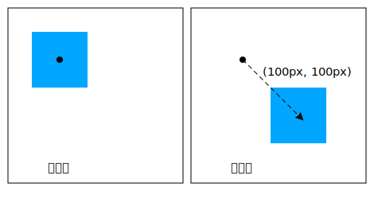
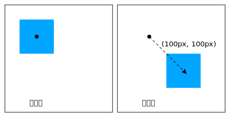

CSS Transform （変形, 変換（座標系変換））は、要素を 二次元あるいは三次元 空間の中で変形させられるようにするための， CSS によるスタイル付けを規定する。
この仕様は、
CSS 2D transforms,
CSS 3D transforms,
SVG transforms
仕様の統合である。
CSS transforms allows elements styled with CSS to be transformed in two-dimensional or three-dimensional space. This specification is the convergence of the CSS 2D transforms, CSS 3D transforms and SVG transforms specifications.
CSS の`視覚~整形~model$は、各 要素が位置される座標系について述べている。
この座標空間における位置と~sizeは、原点から右方／下方に向かって増大する画素~数による正の値で表されるものと捉え得る。
◎
The CSS visual formatting model describes a coordinate system within each element is positioned. Positions and sizes in this coordinate space can be thought of as being expressed in pixels, starting in the origin of point with positive values proceeding to the right and down.
この座標空間は， `transform$p ~propにより変更できる。
この変形により，要素を~2D（二次元）／~3D（三次元）空間の中で並進させ, 回転させ, 拡縮させられる。
【以下、“~2D” ／ “~3D” に表記を統一する。】
◎
This coordinate space can be modified with the transform property. Using transform, elements can be translated, rotated and scaled in two or three dimensional space.
変形の操作をより容易くするための，追加の~propもあり、作者は，入子にされた~3D変形の~~作用についての制御も可能になる。
◎
Additional properties make working with transforms easier, and allow the author to control how nested three-dimensional transforms interact.
`transform-origin$p ~propは、要素~上に適用される変形の原点について制御する，簡便な方法を提供する。
◎
The transform-origin property provides a convenient way to control the origin about which transforms on an element are applied.
`perspective$p ~propにより、~3D変形を伴う一連の子~要素を，共通の~3D~空間に属しているかのように現れさせられる。
`perspective-origin$p ~propは、遠近法が適用される原点についての制御を提供し，それにより実質的な “消失点” の位置を変えられる。
◎
The perspective property allows the author to make child elements with three-dimensional transforms appear as if they live in a common three-dimensional space. The perspective-origin property provides control over the origin at which perspective is applied, effectively changing the location of the "vanishing point".
`transform-style$p ~propは、~3D変形されたいくつかの要素とその~3D変形された子孫たちを，同じ~3D~空間に共存させ、~3D~object階層の構築を可能にする。
◎
The transform-style property allows 3D-transformed elements and their 3D-transformed descendants to share a common three-dimensional space, allowing the construction of hierarchies of three-dimensional objects.
`backface-visibility$p ~propは、要素が，その裏側が`視点$から可視になるように，~3D変形を通して反転されているときに、効力を発揮する。
その種の要素は，隠される方が望ましい状況もあるが、この~propに対する値 `hidden^v の利用が，それを可能にする。
◎
The backface-visibility property comes into play when an element is flipped around via three-dimensional transforms such that its reverse side is visible to the viewer. In some situations it is desirable to hide the element in this situation, which is possible using the value of hidden for this property.
注記：
`transform$p ~propの一部の値は，要素を ~3D~座標系において変形させるが、その要素~自身は~3D~objectにはされない。
それらは~2D~平面~内に存在し，奥行きを持たない。
◎
Note: While some values of the transform property allow an element to be transformed in a three-dimensional coordinate system, the elements themselves are not three-dimensional objects. Instead, they exist on a two-dimensional plane (a flat surface) and have no depth.
この~moduleは、適用-対象の要素の視覚的~描画に影響する，一連の CSS ~propを定義する —
これらの効果は、 `CSS21$r の`視覚~整形~model$に従って，要素の~sizeと位置が~~決定された後に適用される。
これらの~propの一部の値に対しては、新たな`包含塊$が設置されたり, `積層文脈$が確立される。
◎
This module defines a set of CSS properties that affect the visual rendering of elements to which those properties are applied; these effects are applied after elements have been sized and positioned according to the Visual formatting model from [CSS21]. Some values of these properties result in the creation of a containing block, and/or the creation of a stacking context.
~3D変形は，要素の視覚的な積層順にも影響し、
`CSS21$r の
付録 E
に述べられている，奥から手前にかけての塗り順序を上書きする。
◎
Three-dimensional transforms can also affect the visual layering of elements, and thus override the back-to-front painting order described in Appendix E of [CSS21].
変形は、 `CSS3BG$r にて指定される `background-attachment$p ~propに値 `fixed^v を伴う要素~上の背景~描画にも影響する。
◎
Transforms affect the rendering of backgrounds on elements with a value of fixed for the background-attachment property, which is specified in [CSS3BG].
変形は、 `CSSOM-VIEW$r による `Element^code ~interface拡張：
`getClientRects()^code,
`getBoundingClientRect()^code
が返す~client矩形にも影響する。
◎
Transforms affect the client rectangles returned by the Element Interface Extensions getClientRects() and getBoundingClientRect(), which are specified in [CSSOM-VIEW].
an element whose layout is governed by the CSS box model which is either a block-level or atomic inline-level element, or whose display property computes to table-row, table-row-group, table-header-group, table-footer-group, table-cell, or table-caption [CSS21]
SVG 名前空間に属する, かつ
CSS ~box~modelにより統制されない, かつ［
`transform$svgattr,
`patternTransform$svgattr,
`gradientTransform$svgattr
］のいずれかの属性を持つ要素。
`SVG11$r
◎
an element in the SVG namespace and not governed by the CSS box model which has the attributes transform, ‘patternTransform‘ or gradientTransform [SVG11].
`変形要素@◎transformed element
`transform$p ~propの算出値に `none^v 以外の値を伴う要素。
◎
An element with a computed value other than none for the transform property.
`~3D変形要素@◎3D-transformed element
`transform$p ~propの算出値に `~3D変形関数$を伴う要素。
◎
An element whose computed value for the transform property includes one of the 3D transform functions
`利用座標系@◎user coordinate system
`局所座標系@◎local coordinate system
一般に，現在の~canvas上の位置と距離を定義する座標系を指す。
現在の局所座標系（利用座標系とも呼ばれる）とは、現在の~canvas上の 座標や長さを算出する方法を定義する，現在~利用中の座標系を意味する。
◎
In general, a coordinate system defines locations and distances on the current canvas. The current local coordinate system (also user coordinate system) is the coordinate system that is currently active and which is used to define how coordinates and lengths are located and computed, respectively, on the current canvas.
現在の利用座標系の原点は、 `transform-box$p ~propにより指定される`基準~box$の左上隅に位置する。
百分率~値は、この基準~boxの寸法に相対的になる。
1 単位は 1 CSS 画素に等しい。
◎
The current user coordinate system has its origin at the top-left of a reference box specified by the transform-box property. Percentage values are relative to the dimension of this reference box. One unit equals one CSS pixel.
`透視行列@◎perspective matrix
`perspective$p, `perspective-origin$p
~propの値から，
後述の様に
算出される行列。
◎
A matrix computed from the values of the perspective and perspective-origin properties as described below.
`変換行列@◎transformation matrix
ある座標系から別の座標系への数学的な写像を定義する行列。
`transform$p, `transform-origin$p ~propの値から，
後述の様に
算出される。
◎
A matrix that defines the mathematical mapping from one coordinate system into another. It is computed from the values of the transform and transform-origin properties as described below.
`現在の変換行列@（ CTM ）◎CTM — current transformation matrix）
局所座標系から表示域 座標系への写像を定義する行列。
◎
A matrix that defines the mapping from the local coordinate system into the viewport coordinate system.
`累積~3D変換行列@◎accumulated 3D transformation matrix
要素に対し，その`~3D描画文脈$の根に相対的に算出される行列
— 詳細は`累積~3D変換行列の算出$ 節に。
◎
A matrix computed for an element relative to the root of its 3D rendering context, as described below.
`~2D行列@◎2D matrix
6 項からなる 3x2 の変換行列であるか、または
16 項からなる 4x4 の変換行列であって，項［
`31^m, `32^m, `13^m, `23^m, `43^m, `14^m, `24^m, `34^m
］が 0 に等しく, 項［
`33^m, `44^m
］が 1 に等しいもの。
◎
A 3x2 transformation matrix with 6 items or a 4x4 matrix with 16 items, where the items m31, m32, m13, m23, m43, m14, m24, m34 are equal to 0 and m33, m44 are equal to 1.
A transform function that is equivalent to a identity 4x4 matrix (see Mathematical Description of Transform Functions). Examples for identity transform functions are translate(0), translate3d(0, 0, 0), translateX(0), translateY(0), translateZ(0), scale(1), scaleX(1), scaleY(1), scaleZ(1), rotate(0), rotate3d(1, 1, 1, 0), rotateX(0), rotateY(0), rotateZ(0), skew(0, 0), skewX(0), skewY(0), matrix(1, 0, 0, 1, 0, 0) and matrix3d(1, 0, 0, 0, 0, 1, 0, 0, 0, 0, 1, 0, 0, 0, 0, 1). A special case is perspective: perspective(infinity). The value of m34 becomes infinitesimal small and the transform function is therefore assumed to be equal to the identity matrix.
`~3D描画文脈@◎3D rendering context
同じ~3D~座標系に共存するような、先祖が共通する要素の集合。
詳細は
~3D 描画文脈
節に。
◎
A set of elements with a common ancestor which share a common three-dimensional coordinate system, as described below
UAs may not always be able to render three-dimensional transforms and then just support a two-dimensional subset of this specification. In this case three-dimensional transforms and the properties transform-style, perspective, perspective-origin and backface-visibility must not be supported. Section 3D Transform Rendering does not apply. Matrix decomposing uses the technique taken from the "unmatrix" method in "Graphics Gems II, edited by Jim Arvo", simplified for the 2D case. Section Mathematical Description of Transform Functions is still effective but can be reduced by using a 3x3 transformation matrix where a equals m11, b equals m12, c equals m21, d equals m22, e equals m41 and f equals m42 (see A 2D 3x2 matrix with six parameter).
3x3 matrix for two-dimensional transformations.
~UAが~3D変形を~supportしない場合の~fallbackも容易に供せる。
次の例に 2 つの `transform$p ~prop定義を示す。
最初のものは 2 個の~2D~変形関数からなり， 2 番目のものは ~2Dと~3Dの変形関数を持つ。
◎
Authors can easily provide a fallback if UAs do not provide support for three-dimensional transforms. The following example has two property definitions for transform. The first one consists of two two-dimensional transform functions. The second one has a two-dimensional and a three-dimensional transform function.
~3D~supportがあれば， 2 番目の定義が最初のものを上書きすることになる。
~3D~supportが無ければ， 2 番目の定義は無効になり，~UAは最初の定義に~fall-backする。
◎
With 3D support, the second definition will override the first one. Without 3D support, the second definition is invalid and a UA falls back to the first definition.
6. 変形の描画~model
この節は規定である。
◎
This section is normative.
`transform$p ~propに対する `none^v 以外の値の指定は、適用-対象の要素において，新たな`局所座標系$を確立させる。
この~propにより指定される`変換行列$は、要素の描画~先の座標系から，その局所座標系への写像を与える【†】。
変換は累積的である。
すなわち、要素はその親の座標系の中で局所座標系を確立する。
利用者~側からは、要素は，実質的に，それに適用される局所~変形のみならず，その先祖のすべての `transform$p ~propが累積されたように見える。
要素に対する`現在の変換行列$（ CTM ）が、これらの変形の累積により定義される。
◎
Specifying a value other than none for the transform property establishes a new local coordinate system at the element that it is applied to. The mapping from where the element would have rendered into that local coordinate system is given by the element’s transformation matrix. Transformations are cumulative. That is, elements establish their local coordinate system within the coordinate system of their parent. From the perspective of the user, an element effectively accumulates all the transform properties of its ancestors as well as any local transform applied to it. The accumulation of these transforms defines a current transformation matrix (CTM) for the element.
座標空間は、2 本の軸
— `視点$から見て、右向きが正方向の X 軸, 下向きが正方向の Y 軸 —
を伴う座標系である。
~3D~変形関数のときは、画面に垂直で, 視点に向けて増大する Z 軸が加わり，この座標空間が~3Dに拡張される。
◎
The coordinate space is a coordinate system with two axes: the X axis increases horizontally to the right; the Y axis increases vertically downwards. Three-dimensional transform functions extend this coordinate space into three dimensions, adding a Z axis perpendicular to the plane of the screen, that increases towards the viewer.
`coordinates^dgm
初期時の座標空間の例示。
◎
Demonstration of the initial coordinate space.
`変換行列$は、
`transform$p, `transform-origin$p
~propから，次の様にして算出される：
◎
The transformation matrix is computed from the transform and transform-origin properties as follows:
単位行列から開始。
◎
Start with the identity matrix.
`transform-origin$p の算出値による X, Y, Z で並進させる — (A)
◎
Translate by the computed X, Y and Z values of transform-origin
【
すなわち，［
移動量 X, Y, Z による`~3D並進$
］で積をとる。
局所座標系の (0, 0, 0) は，`基準~box$がなす座標系（原点は~boxの左上隅）の (X, Y, Z) に写像される。
】
左から右の順に，［
`transform$p ~propで与えられる変形関数~list
］の各~変形関数により積をとる。
◎
Multiply by each of the transform functions in transform property from left to right
【
すなわち、対応する変換行列により，同じ順序で積をとる
】
(A) と同じ移動量だけ逆方向に，並進させる。
◎
Translate by the negated computed X, Y and Z values of transform-origin
【
すなわち、(A) の逆行列により，積をとる
】
変形は、`変形可能$な要素に適用される。
◎
Transforms apply to transformable elements.
注記：
変換は、~canvas上の描画には影響するが、 CSS ~layout自体には，overflowを除いて影響しない。
変形は、 `CSSOM-VIEW$r にて指定される［
`Element^code ~interface拡張により公開される
`getClientRects()^code,
`getBoundingClientRect()^code
］による~client矩形の算出にも織り込まれる。
◎
Note: Transformations do affect the visual rendering, but have no affect on the CSS layout other than affecting overflow. Transforms are also taken into account when computing client rectangles exposed via the Element Interface Extensions, namely getClientRects() and getBoundingClientRect(), which are specified in [CSSOM-VIEW].
div {
transform: translate(100px, 100px);
}
この変形は、要素を X, Y 両方向に 100 画素~移動させる（図左が変形~前, 図右が変形~後）。
◎
This transform moves the element by 100 pixels in both the X and Y directions.
`transform-origin$p ~propにより，原点を X, Y 両方向に 50 画素ずつずらす。
`transform^p は，原点を中心に要素を時計回りに 45° 回転させる。
すべての変形関数が適用された後、原点は， X, Y 両方向に -50 画素だけ並進されて引き戻される。
◎
The transform-origin property moves the point of origin by 50 pixels in both the X and Y directions. The transform rotates the element clockwise by 45° about the point of origin. After all transform functions were applied, the translation of the origin gets translated back by -50 pixels in both the X and Y directions.
この変形は、要素を
X, Y 両方向に 80 画素~移動させ,
150% に拡大してから,
Z 軸を中心に時計回りに 45° 回転させる。
拡縮と回転は、要素の既定の変換原点（ `transform-origin$p ）が `50% 50%^v なので，要素の中心を軸に作用することに注意。
◎
This transform moves the element by 80 pixels in both the X and Y directions, then scales the element by 150%, then rotates it 45° clockwise about the Z axis. Note that the scale and rotation operate about the center of the element, since the element has the default transform-origin of 50% 50%.
~layoutが CSS ~box~modelにより統制される要素においては、変形~propは，`変形要素$の周囲の内容の~flowには影響しない。
しかしながら、~overflow領域には，`変形要素$も織り込まれる。
この挙動は、要素が相対的な位置決（
`position$p: `relative^v
）を通してずらされるときに類似する。
したがって， `overflow$p ~propの値が
`scroll^v ／ `auto^v
の下では、可視~領域の外側に変形された内容も見れるようにするための~scrollbarが，必要に応じて現れることになる。
◎
For elements whose layout is governed by the CSS box model, the transform property does not affect the flow of the content surrounding the transformed element. However, the extent of the overflow area takes into account transformed elements. This behavior is similar to what happens when elements are offset via relative positioning. Therefore, if the value of the overflow property is scroll or auto, scrollbars will appear as needed to see content that is transformed outside the visible area.
~layoutが CSS ~box~modelにより統制される要素においては、変形に対する `none^v 以外のどの値も，`積層文脈$と`包含塊$の両者を作成させる。
~objectは，固定位置にされた子孫に対する包含塊としてふるまう。
◎
For elements whose layout is governed by the CSS box model, any value other than none for the transform results in the creation of both a stacking context and a containing block. The object acts as a containing block for fixed positioned descendants.
これは固定位置（
`position$p: `fixed^v
）にも効果を及ぼす必要があるだろうか？
そうであれば、固定位置にされた~objectがこれをすべき理由について詳細を述べる必要がある
— その実装はずっと困難になるので。
`16328$bug を見よ。
◎
Is this effect on position: fixed necessary? If so, need to go into more detail here about why fixed positioned objects should do this, i.e., that it’s much harder to implement otherwise. See Bug 16328.
根~要素~上に`固定された背景$は、その要素に指定されたどの変形からも影響される。
変形から影響される（すなわち，自身または先祖の要素に変形が適用されている）他のすべての要素に対しては、 `background-attachment$p ~propに対する値 `fixed^v は，値 `scroll^v を持つかのように扱われる。
`background-attachment$p の算出値は影響されない。
◎
Fixed backgrounds on the root element are affected by any transform specified for that element. For all other elements that are effected by a transform (i.e. have a transform applied to them, or to any of their ancestor elements), a value of fixed for the background-attachment property is treated as if it had a value of scroll. The computed value of background-attachment is not affected.
注記：
根~要素が変形された場合、変換は，根~要素に指定されている背景も含めて，~canvas全体に適用される。
`根~要素に対する背景~塗り領域$は ~canvas全体であり無限なので、変換により，元々は~screen外に在った背景の一部分が現れるようになり得る。
例えば，根~要素の背景が~dotの繰り返し模様であって，
根~要素~上に変換
`scale(0.5)^v
が指定されていたなら、~dotの大きさは半分になるが，その個数は 2 × 2 倍になり，依然として表示域の全面を覆うことになる。
◎
Note: If the root element is transformed, the transformation applies to the entire canvas, including any background specified for the root element. Since the background painting area for the root element is the entire canvas, which is infinite, the transformation might cause parts of the background that were originally off-screen to appear. For example, if the root element’s background were repeating dots, and a transformation of scale(0.5) were specified on the root element, the dots would shrink to half their size, but there will be twice as many, so they still cover the whole viewport.
通常は、要素は平面的に，それを`包含している塊$と同じ平面に埋め込まれる様に描画される。
大抵の場合，それは頁の残りの部分と共有される平面になる。
~2D~変形関数は要素の外観を改め得るが、依然として，描画される平面は 要素を`包含している塊$と同じである。
◎
Normally, elements render as flat planes, and are rendered into the same plane as their containing block. Often this is the plane shared by the rest of the page. Two-dimensional transform functions can alter the appearance of an element, but that element is still rendered into the same plane as its containing block.
~3D変形の変換行列は，ゼロでない Z 成分を伴い得る（ Z 軸は~screenの平面から飛び出す軸）。
その結果、要素を`包含している塊$の平面と異なる平面~上に描画され、他の要素に相対的な，手前から奥への要素の描画~順序にも影響するのみならず，他の要素と交差し得る。
◎
Three-dimensional transforms can result in transformation matrices with a non-zero Z component (where the Z axis projects out of the plane of the screen). This can result in an element rendering on a different plane than that of its containing block. This may affect the front-to-back rendering order of that element relative to other elements, as well as causing it to intersect with other elements.
要素に適用される~3D変形の効果を，次の例に示す：
◎
This example shows the effect of three-dimensional transform applied to an element.
変形は 縦方向の Y 軸を中心に 50° 回転させる。
これにより，青色の~boxは狭小に現れるが、~3Dではない。
◎
The transform is a 50° rotation about the vertical, Y axis. Note how this makes the blue box appear narrower, but not three-dimensional.
6.1.1. 遠近法
`perspective$p, `perspective-origin$p
~propを利用すれば、風景に奥行き感を与えられる
—
要素は、その Z 座標（以下 %z ）を高くする（`視点$に近付ける）ほど，より大きく現れ、低くする（`視点$から遠ざける）ほど，より小さく現れる。
拡縮率は［
%d ∕ ( %d − %z )
］に比例する。
ここで， %d は `perspective$p の値であり，画面から視点と見なされる地点（下図の “Assumed Eye Position”）までの距離を与える。
◎
The perspective and perspective-origin properties can be used to add a feeling of depth to a scene by making elements higher on the Z axis (closer to the viewer) appear larger, and those further away to appear smaller. The scaling is proportional to d/(d − Z) where d, the value of perspective, is the distance from the drawing plane to the the assumed position of the viewer’s eye.
`perspective_distance^dgm
拡縮ingが `perspective$p ~propと Z 位置に依存する様子を示す図式。
上段の図式では， %z が %d の半分にされている。
元の円（実線）が %z （点線の円）の所に現れるようにするため、円は 2 倍に拡大され，水色の円で示されるものになる。
下段の図式では、円は 2 ∕ 3 倍に縮小されて，元の位置の背後に現れる。
◎
Diagrams showing how scaling depends on the perspective property and Z position. In the top diagram, Z is half of d. In order to make it appear that the original circle (solid outline) appears at Z (dashed circle), the circle is scaled up by a factor of two, resulting in the light blue circle. In the bottom diagram, the circle is scaled down by a factor of one-third to make it appear behind the original position.
通常は、`視点$と見なされる地点は，絵図の中心（真正面）に位置する。
必要なら `perspective-origin$p を設定して，この位置を移動させることもできる
—
例えば、頁~内の複数の絵図が，同じ遠近法を共有すべき場合など。
◎
Normally the assumed position of the viewer’s eye is centered on a drawing. This position can be moved if desired – for example, if a web page contains multiple drawings that should share a common perspective – by setting perspective-origin.
`perspective_origin^dgm
遠近法の原点を上方に移動させる効果を示す図式。
◎
Diagram showing the effect of moving the perspective origin upward.
`透視行列$は、次の様にして算出される：
◎
The perspective matrix is computed as follows:
（単位行列に対し、以下の変換を累積する）
◎
Start with the identity matrix.
`perspective-origin$p の算出値による X, Y 値により，並進させる — (A)
◎
Translate by the computed X and Y values of perspective-origin
【
すなわち， X, Y による`~2D並進$で右から積をとる（現在の座標系の原点が親の座標系の (X, Y, 0) に写像される）。
】
`perspective$f 変形関数から得られる行列により積をとる
— 引数の長さ値は `perspective$p ~propの値から供される
◎
Multiply by the matrix that would be obtained from the perspective() transform function, where the length is provided by the value of the perspective property
【
すなわち，`透視投影行列$により右から積をとる。
】
(A) と同じ移動量だけ逆方向に，並進させる。
◎
Translate by the negated computed X and Y values of perspective-origin
【
すなわち、(A) の逆行列により，右から積をとる
】
次の例に、~3D変形が より本物らしく現れるようにするための， `perspective^p の用法を示す：
◎
This example shows how perspective can be used to cause three-dimensional transforms to appear more realistic.
内側の要素は，前の例と同じ変形を持つが、その描画は今や，その親~要素~上の `perspective^p ~propから~~影響を受けている。
`perspective^p により、絵図の中の点の X, Y 座標は、その Z 座標が（`視点$により近い）正の所では，拡大される一方，（`視点$からより遠い）負の所では縮小され、外観に奥行き感が与えられる。
◎
The inner element has the same transform as in the previous example, but its rendering is now influenced by the perspective property on its parent element. Perspective causes vertices that have positive Z coordinates (closer to the viewer) to be scaled up in X and Y, and those further away (negative Z coordinates) to be scaled down, giving an appearance of depth.
6.1.2. ~3D 描画文脈
この節では、~3D変形, および `transform-style$p ~propを利用する内容を描画するための~modelを指定する。
この~modelを述べるため、 “~3D描画文脈” の概念を導入する。
◎
This section specifies the rendering model for content that uses 3D-transforms and the transform-style property. In order to describe this model, we introduce the concept of a "3D rendering context".
`~3D描画文脈$とは、［
~3D変形を描画する目的において 同じ~3D座標系に共存するものと見なされるような，共通の先祖
］を根とする要素の集合である。
~3D描画文脈における要素の手前から奥への描画は，その~3D空間における z-位置に依存し、~3D変形により 要素が互いに交差するときは，その交差~~状態で描画される。
◎
A 3D rendering context is a set of elements rooted in a common ancestor that, for the purposes of 3D-transform rendering, are considered to share a common three-dimensional coordinate system. The front-to-back rendering of elements in the a 3D rendering context depends on their z-position in that three-dimensional space, and, if the 3D transforms on those elements cause them to intersect, then they are rendered with intersection.
◎
A 3D rendering context is established by an element which has a used value for transform-style of "flat". Descendant elements with a used value for transform-style of "auto" or "preserve-3d" share their enclosing 3D rendering context. A descendant with a used value for transform-style of "flat" participates in its containing 3D rendering context, but establishes a new 3D rendering context for its descendants. For the purposes of rendering in its containing 3D rendering context, it behaves like a flat plane.
注記：
これは、 CSS 積層文脈に概念的に類似する。
明示的な `z-index$p を伴う位置指定された要素は、先祖の積層文脈に関与しつつ，積層文脈を確立する。
同様に、要素は，先祖の~3D描画文脈に関与しつつ，その子孫のための~3D描画文脈を確立できる。
ちょうど，積層文脈~下の要素が `z-index^p 順序で描画されるのと似るように、
~3D描画文脈に属する要素は， z-深度の順序で描画され，交差し得る。
◎
Note: This is conceptually similar to CSS stacking contexts. A positioned element with explicit z-index establishes a stacking context, while participating in the stacking context of an ancestor. Similarly, an element can establish a 3D rendering context for its descendants, while participating in the 3D rendering context of an ancestor. Just as elements within a stacking context render in z-index order, elements in a 3D-rendering context render in z-depth order and can intersect.
CSS ~propには、要素が他の要素と合成される前に，要素 およびその子孫たちを~groupとして描画することを要するような、 “~grouping” を強制する値をとるものがある。
これらには、不透明度, ~filter, ~clippingに影響する~propも含まれる。
これに関連する~prop値は、`~grouping~prop値$に挙げる。
これらの~grouping~prop値は、 `transform-style$p の使用値を `flat^v に強制する。
その種の要素は、
`平坦的~要素@
と呼ばれる。
その帰結として、それらは常に，新たな~3D描画文脈を確立する。
根~要素は常に， `transform-style^p の使用値に `flat^v をとる。
◎
Some CSS properties have values that are considered to force "grouping": they require that their element and its descendants are rendered as a group before being composited with other elements; these include opacity, filters and properties that affect clipping. The relevant property values are listed under grouping property values. These grouping property values force the used value for transform-style to be "flat", and such elements are referred to as flattening elements. Consequently, they always establish a new 3D rendering context. The root element always has a used value of "flat" for transform-style.
~3D描画文脈に属する要素の描画は、次の様になる
— 以下、その~3D描画文脈を確立している要素を %R と記す（括弧内の “step `数字^V” は
CSS 2.1, Appendix E.2 塗り順序
のそれを表す）：
◎
The rendering of elements in a 3D rendering context is as follows (numbers refer to items in CSS 2.1, Appendix E, Section E.2 Painting Order):
%R の背景, ~border, 他の~box装飾が描画される（ step 1, 2 ）
◎
The background, borders and other box decorations of the establishing element are rendered (steps 1 and 2)
3D 変形を伴わない［
内容, および子孫~要素
］は、 step 3 〜 7 に従って順序~付けられ，
%R に相対的な z=0 平面に描画される
◎
The content and descendant elements without 3D transforms, ordered according to steps 3—7, are rendered into a plane at z=0 relative to to the establishing element.
`~3D変形要素$は，それぞれが所有する平面に`累積~3D変換行列$により変形されて描画される。
◎
3D-transformed elements are each rendered into their own plane, transformed by the accumulated 3D transformation matrix.
`Newell のアルゴリズム$に従って，段 B, C で生成された平面の集合~間で，交差が行われる。
◎
Intersection is performed between the set of planes generated by steps B and C, according to Newell’s algorithm.
結果の平面の集合が、段 A にて描画された背景と~box装飾の上に，描画される。
同一~平面にある`~3D変形要素$たちは、塗り順序で描画される。
◎
The resulting set of planes is rendered on top of the backgrounds and box decorations rendered in this step A. Coplanar 3D transformed elements are rendered in painting order.
~2D`変形要素$たちを それぞれが所有する平面の中へ pop しなくて大丈夫か？
◎
is it OK to not pop 2D-transformed elements into their own planes?
未~変形の内容とその子孫に交差が要求されるとした場合、~UAは，追加の~textureを割り当てなければならなくなる（~memory消費が倍になり得る）。
内容と未~変形の子孫を，単に背景と~borderに従って描画する方がより効率的になるであろう。
◎
requiring intersection with non-transformed content and descendants requires UAs to allocate additional textures (possibly doubling memory use). Would be more efficient to simply render content and untransformed descendants along with background and borders.
z-成分が負にされた変形を伴う要素は，［
内容, および %R の非~変形 子孫
］の背後に描画されることに注意。
したがって `~3D変形要素$は、内容と非`変形要素$に浸出し得る。
◎
Note that elements with transforms which have a negative z-component will render behind the content and untransformed descendants of the establishing element, and that 3D transformed elements may interpenetrate with content and untransformed elements.
注記：
~3D描画文脈における`~3D変形要素$は、深度~順に基づいて互いに交差し得るので、実質的に，互いに同胞であるかのように描画される。
`transform-style^p: `preserve-3d^v
による効果は、~3D描画文脈に属する どの`~3D変形要素$も，
%R の下に巻上げられつつ，依然として自身の`累積~3D変換行列$により描画されるようになるものと，捉えられる。
◎
Note: Because the 3D-transformed elements in a 3D rendering context can all depth-sort and intersect with each other, they are effectively rendered as if they were siblings. The effect of transform-style: preserve-3d can then be thought of as causing all the 3D transformed elements in a 3D rendering context to be hoisted up into the establishing element, but still rendered with their accumulated 3D transformation matrix.
この例は、~3D描画文脈~内の要素が互いに交差し得ることを示す。
容器~要素（ `.container^css ）は、自身とその 2 個の子孫に対する~3D描画文脈を確立する。
子は互いに交差し、橙色にされた要素は，容器と互いに交差する。
◎
This example shows show elements in a 3D rendering context can intersect. The container element establishes a 3D rendering context for itself and its two children. The children intersect with each other, and the orange element also intersects with the container.
`3d-intersection^dgm
`perspective$p ~propを利用すれば、結果の~3D描画文脈に属する子孫~memberに共通する，`透視行列$を供することができ、それらの`~3D変形要素$を，奥行きを伴う共通の~3D空間に属するかのように現れさせられる。
その行列は、`累積~3D変換行列の算出$に織り込まれる。
◎
The perspective property can be used to ensure that 3D transformed elements in the resulting 3D rendering context appear to live in a common three-dimensional space with depth, by suppling a common perspective matrix to descendant transformed members of its 3D rendering context, which is taken into account in the accumulated 3D matrix computation.
既定では、
`perspective$p に `none^v 以外の値をとる要素は、`平坦的$, したがって~3D描画文脈を確立する。
しかしながら， `transform-style$p を `preserve-3d^v に設定すれば、その種の要素が（他に有効な`~grouping~prop値$がない限り，）それを包含している~3D描画文脈を拡張できるようになる。
◎
By default, elements with value for perspective other than none are flattening, and thus establish a 3D rendering context. However, setting transform-style to preserve-3d allows the perspective element to extend its containing 3D rendering context (provided no other grouping property values are in effect).
この例は、入子にされた~3D変形の描画の様子を示すものである。
青色の `div^code は，前の例の様に、その描画が その親~要素~上の遠近法（ `perspective^p ）の~~影響を受けて，変形される。
黄緑色の要素も，（ `transform-origin^p の効力により，青色の `div^code の上端に固定された） X 軸を中心に回転される，~3D変形を持つ —
しかしながら，同じ~3D描画文脈には属さないので、親は “平坦” になる。
そのため、黄緑色の要素は短く現れ，青色の要素から “飛び出す” ことはない。
◎
This example shows how nested 3D transforms are rendered. The blue div is transformed as in the previous example, with its rendering influenced by the perspective on its parent element. The lime element also has a 3D transform, which is a rotation about the X axis (anchored at the top, by virtue of the transform-origin). However, the lime element is being rendered into the plane of its parent because it is not a member of the same 3D rendering context; the parent is "flattening". Thus the lime element only appears shorter; it does not "pop out" of the blue element.
`3d-rendering-context-flat^dgm
6.1.3. 変形要素の階層
既定では、`変形要素$は`平坦的$であり，したがって`~3D描画文脈$を確立する。
この平坦的~挙動は、他に`~grouping~prop値$が無ければ，
`transform-style$p ~propに値 `preserve-3d^v を指定して上書きできる。
それは、共通の~3D空間を共有する，変形された~objectからなる階層を構築するために有用になる。
これにより、`変形要素$の子孫たちが，同じ~3D描画文脈を共有できるようになる。
その種の要素の~3D変形されていない子孫たちは、上述の段 C における要素の平面に描画される一方、同じ~3D描画文脈に共存する`~3D変形要素$は、それぞれが所有する平面から “飛び出す” 。
◎
By default, transformed elements are flattening, and thus establish a 3D rendering context. However, since it is useful to construct hierarchies of transformed objects that share a common 3-dimensional space, this flattening behavior may be overridden by specifying a value of preserve-3d for the transform-style property, provided no other grouping property values are in effect. This allows descendants of the transformed element to share the same 3D rendering context. Non-3D-transformed descendants of such elements are rendered into the plane of the element in step C above, but 3D-transformed elements in the same 3D rendering context will "pop out" into their own planes.
この例は、青色の要素~上に
`transform-style$p: `preserve-3d^v
が追加されたことを除いて，前の例と同じになる。
青色の要素は今や，その容器の~3D描画文脈を拡張する。
それにより，青色と黄緑色の両~要素が同じ~3D~空間に共存するので、黄緑色の要素は，容器~上の遠近法の~~影響を受け，その親から【~3D的に】傾けられて描画される。
◎
This example is identical to the previous example, with the addition of transform-style: preserve-3d on the blue element. The blue element now extends the 3D rendering context of its container. Now both blue and lime elements share a common three-dimensional space, so the lime element renders as tilting out from its parent, influenced by the perspective on the container.
［
`~3D描画文脈$に属する要素を描画する際に利用される変形
］の最終的な値は、次の様に，~3D変換行列を累積して算出される：
◎
The final value of the transform used to render an element in a 3D rendering context is computed by accumulating an accumulated 3D transformation matrix as follows:
`変換^V ~LET 単位行列
◎
Let transform be the identity matrix.
`現在の要素^V ~LET 対象の変形要素
◎
Let current element be the transformed element.
`根~要素^V ~LET `現在の要素^V の`~3D描画文脈$を確立した要素
◎
↓
~WHILE ( `現在の要素^V ~NEQ `根~要素^V )：
◎
Let ancestor block be the element that establishes the transformed element’s containing block.
◎
While current element is not the element that establishes the transformed element’s 3D rendering context:
~IF
`現在の要素^V に対する `transform$p の値が `none^v でない：
`変換^V ~SET ( `現在の要素^V の`変換行列$ ) × `変換^V
◎
If current element has a value for transform which is not none, pre-multiply current element’s transformation matrix with the transform.
`先祖~塊^V ~LET `現在の要素^V の`包含塊$を確立した要素
◎
↓
`変換^V ~SET (
`現在の要素^V の `先祖~塊^V からの~offsetを表現する並進~行列
) × `変換^V
◎
Compute a translation matrix which represents the offset of current element from its ancestor block, and pre-multiply that matrix into the transform.
~IF
`先祖~塊^V に対する `perspective$p の値が `none^v でない：
`変換^V ~SET ( `先祖~塊^V の`透視行列$ ) × `変換^V
◎
If ancestor block has a value for perspective which is not none, pre-multiply the ancestor block’s perspective matrix into the transform.
`現在の要素^V ~SET `先祖~塊^V
◎
Let ancestor block be the element that establishes the current element’s containing block.
◎
Let current element be the ancestor block.
注記：
ここに述べたように，`累積~3D変換行列$は、［
変形要素~上の`視覚~整形~model$, および［
変形要素から それの`~3D描画文脈$を確立した要素までにある，先祖の連鎖~内の要素
］］により生成された~offset織り込む。
◎
Note: as described here, the accumulated 3D transformation matrix takes into account offsets generated by the visual formatting model on the transformed element, and elements in the ancestor chain between the transformed element and the element that establishes the its 3D rendering context.
6.1.5. 裏面可視性
~3D変形を利用すれば、要素を，その裏側が可視になるように変形させられる。
`~3D変形要素$は，その両側にて同じ内容を示すので、裏側は表側の鏡像に見えるようになる（要素を鏡に映し出したかのように）。
通常は、裏側を向けている要素は，視点から可視~のままであるが、
`backface-visibility$p ~propの利用により，要素を その裏側が視点に向いているときには不可視にさせられる。
この挙動は “動的（ live ）” である
—
例えば，
`backface-visibility$p: `hidden^v
にされた要素が，その表側と裏側が交互に可視になる様に~animateされている場合、表側が視点に向くときにのみ可視になる
◎
Using three-dimensional transforms, it’s possible to transform an element such that its reverse side is visible. 3D-transformed elements show the same content on both sides, so the reverse side looks like a mirror-image of the front side (as if the element were projected onto a sheet of glass). Normally, elements whose reverse side is towards the viewer remain visible. However, the backface-visibility property allows the author to make an element invisible when its reverse side is towards the viewer. This behavior is "live"; if an element with backface-visibility: hidden were animating, such that its front and reverse sides were alternately visible, then it would only be visible when the front side were towards the viewer.
要素の裏側の可視性は，`累積~3D変換行列$を用いて考慮されるので、それを封入している`平坦的~要素$に相対的になる。
【可視性は平坦的~要素の平面に垂直な方向から決まる？】
◎
Visibility of the reverse side of an element is considered using the accumulated 3D transformation matrix, and is thus relative to the enclosing flattening element.
注記：
この~propは、遊戯用~cardを作成するときのように， 2 個の要素を裏表に貼り合わせるときに有用になる。
この~propが無ければ、表面と裏面の要素は，~animationで~cardが裏返される度に互いの位置を交換することになる【従って、常に片方しか見えない】。
別の例として、 6 要素で囲まれた直方体の内面だけを見せたいときが挙げられる。
◎
Note: This property is useful when you place two elements back-to-back, as you would to create a playing card. Without this property, the front and back elements could switch places at times during an animation to flip the card. Another example is creating a box out of 6 elements, but where you want to see only the inside faces of the box.
次の例に、 "#card" 要素が~clickされたときに裏返されるように見せる方法を示す。
裏返すときに平坦的にならないようにするため、
#card 上には
`transform-style^p: `preserve-3d^v
を要することに注意。
◎
This example shows how to make a "card" element that flips over when clicked. Note the "transform-style: preserve-3d" on #card which is necessary to avoid flattening when flipped.
`backface-visibility^p は
非~変形要素／ ~2D`変形要素$には どう~~影響する？
それぞれが所有する平面の中へ pop され, 交差するのか？【？】
◎
what is the impact of backface-visibility on non-transformed or 2D-transformed elements? Do they get popped into their own planes and intersect?
6.2. 遠近法により変形された~boxの処理
これは、供された行列を利用して 要素をどの程度~正確に変形するかを，精確に指定するための最初の試案である。
それは，理想的なものではないかもしれない
— 実装者からの~feedbackを歓迎する。
`15605$bug
参照。
◎
This is a first pass at an attempt to precisely specify how exactly to transform elements using the provided matrices. It might not be ideal, and implementer feedback is encouraged. See bug 15605.
`累積~3D変換行列$は、`perspective$p ~prop, および
`transform$p ~prop値の中に在る `perspective()^v 変形関数から影響される。
◎
The accumulated 3D transformation matrix is affected both by the perspective property, and by any perspective() transform function present in the value of the transform property.
この`累積~3D変換行列$は 4×4 行列であるが，変形される~objectは~2D~boxである。
~boxの各~隅
( %a, %b )
を変形するためには、行列はまず，
( %a, %b, 0 ,1 ) †
に，適用され~MUST
— これにより，四次元の点
( %x, %y, %z, %w ) ††
が得られることになる。
これは，次の様に変換されて ~3Dの点
( %x′, %y′, %z′) †††
に戻される：
◎
This accumulated 3D transformation matrix is a 4×4 matrix, while the objects to be transformed are two-dimensional boxes. To transform each corner (a, b) of a box, the matrix must first be applied to (a, b, 0, 1), which will result in a four-dimensional point (x, y, z, w). This is transformed back to a three-dimensional point (x′, y′, z′) as follows:
%n
は実装依存の値であり、なるべく［
%x′ または %y′
が表示域~sizeに比して，ずっと大きくなる
］ように選ばれるべきである。
例えば， %n = 1000 にした場合、
(5px, 22px, 0px, 0)
に対しては
(5000px, 22000px, 0px)
になるが、この %n の値は
(0.1px, 0.05px, 0px, 0)
に対しては 小さ過ぎることになる。
この仕様は、 %n についての正確な値は定義しない。
概念的には、
( %x′, %y′, %z′)
は
( %x, %y, %z )
方向の無限遠に位置する。
◎
If w = 0, (x′, y′, z′) = (x ⋅ n, y ⋅ n, z ⋅ n). n is an implementation-dependent value that should be chosen so that x′ or y′ is much larger than the viewport size, if possible. For example, (5px, 22px, 0px, 0) might become (5000px, 22000px, 0px), with n = 1000, but this value of n would be too small for (0.1px, 0.05px, 0px, 0). This specification does not define the value of n exactly. Conceptually, (x′, y′, z′) is infinitely far in the direction (x, y, z).
変形された~boxの 4 隅すべてで %w < 0 の場合、~boxは描画されない。
◎
If w < 0 for all four corners of the transformed box, the box is not rendered.
変形された~boxの 1 〜 3 個の隅で %w < 0 の場合、~boxは［
%w < 0 の領域
］により隅を切り取った多角形に置換され~MUST。
これは一般に頂点が 3 〜 5 個の多角形であって, そのうち 2 個の隣接する頂点では %w = 0, 残りの頂点では %w > 0 になる。
しかる後，これらの頂点は
前段落の規則を利用して，~3Dの点に変形される。
概念的には，%w < 0 の点は`視点$の “背後” に位置し，従って可視でなくなるべきである。
◎
If w < 0 for one to three corners of the transformed box, the box must be replaced by a polygon that has any parts with w < 0 cut out. This will in general be a polygon with three to five vertices, of which exactly two will have w = 0 and the rest w > 0. These vertices are then transformed to three-dimensional points using the rules just stated. Conceptually, a point with w < 0 is "behind" the viewer, so should not be visible.
~boxのどの隅の %z 座標も，`perspective$f に与えた視点の Z 座標より大きい。
これは~boxが視点の背後にあって表示されないことを意味する。
数学的には、点
( %x, %y )
は，まず
( %x, %y, 0, 1)
にされた後，
( %x, %y, 100, 1)
に並進され，遠近法が適用されて
( %x, %y, 100, −1)
になる。
この座標の %w 成分が負になるため，表示されない。
実装は %w < 0 の事例を分けて取り扱う必要がある。
さもなければ、この座標を −1 で割った
( − %x, − %y, −100 )
による，不正な表示（~boxの鏡像）になり得る。
◎
All of the box’s corners have z-coordinates greater than the perspective. This means that the box is behind the viewer and will not display. Mathematically, the point (x, y) first becomes (x, y, 0, 1), then is translated to (x, y, 100, 1), and then applying the perspective results in (x, y, 100, −1). The w-coordinate is negative, so it does not display. An implementation that doesn’t handle the w < 0 case separately might incorrectly display this point as (−x, −y, −100), dividing by −1 and mirroring the box.
ここでは、~boxは，中心が視点と同じ所に据えられように，上層へ並進される。
これは，視野~全体が埋まるまで，~boxを限りなく視点に近付けるようにする。
既定の `transform-origin$p は，~boxの中心の黄色に塗られる部分に位置するので、~screenは黄色で埋められることになる。
◎
Here, the box is translated upward so that it sits at the same place the viewer is looking from. This is like bringing the box closer and closer to one’s eye until it fills the entire field of vision. Since the default transform-origin is at the center of the box, which is yellow, the screen will be filled with yellow.
数学的には、点
( %x, %y )
は，最初に
( %x, %y, 0, 1)
としてから,
( %x, %y, 50, 1)
に並進され,
遠近法を適用した結果，
( %x, %y, 50, 0)
になる。
左上~隅（ p とする）は、中心に~~位置する変換原点から相対的に
(−50, −50)
の所にあるので， p は
(−50, −50, 50, 0)
に~~位置する。
これは左上から十分に遠い ある地点，例えば
(−5000, −5000, 5000)
に変形される。
同様に、他の隅も十分に遠い所に移される。
~box全体に引き延ばされる放射型~gradient（ `radial-gradient^p ）は，今や非常に広大になるので、可視~部分は，~scrollを伴わないとするなら，中央の画素の色, 黄色になる筈である。
しかしながら，~boxは実際には無限でないので、利用者は依然として，周辺まで~scrollして青色~部分を見ることも可能である。
◎
Mathematically, the point (x, y) first becomes (x, y, 0, 1), then is translated to (x, y, 50, 1), then becomes (x, y, 50, 0) after applying perspective. Relative to the transform-origin at the center, the upper-left corner was (−50, −50), so it becomes (−50, −50, 50, 0). This is transformed to something very far to the upper left, such as (−5000, −5000, 5000). Likewise the other corners are sent very far away. The radial gradient is stretched over the whole box, now enormous, so the part that’s visible without scrolling should be the color of the middle pixel: yellow. However, since the box is not actually infinite, the user can still scroll to the edges to see the blue parts.
~boxの左~辺は固定され、右~辺は扉が開く様に，`視点$に向かって 45° 回転されることになる。
右~辺は、遠近法の値 `50px^v より大きい
%z = `70.7px^v
の所に位置させられるので，（視点の “背後” に）消失することになり、可視~部分は，右方へ無限に遠くまで引き延ばされることになる。
◎
The box will be rotated toward the viewer, with the left edge staying fixed while the right edge swings closer. The right edge will be at about z = 70.7px, which is closer than the perspective of 50px. Therefore, the rightmost edge will vanish ("behind" the viewer), and the visible part will stretch out infinitely far to the right.
数学的には、元々の~~位置が変換原点から相対的に
(100, −50)
の所にあった~boxの右上~頂点は、最初に
(100, −50, 0, 1)
に展開された上で，指定された変形が適用され、およそ
(70.71, −50, 70.71, −0.4142)
の所に写像される。
この %w 座標 −0.4142 は < 0
なので，~boxから［
%w < 0 の領域
］に入る部分を切り取る必要がある。
その結果，新たな右上~頂点は
(50, −50, 50, 0)
になる。
しかる後、これは同じ方向の, 変換原点から上の右方の，遠く離れたある点（例えば
(5000, −5000, 5000)
）に写像される。
右下~隅についても同様の演算が行われ，遠く右下方へ写像される。
結果の~boxは、~screenの辺を大きく越えて延ばされる。
◎
Mathematically, the top right vertex of the box was originally (100, −50), relative to the transform-origin. It is first expanded to (100, −50, 0, 1). After applying the transform specified, this will get mapped to about (70.71, −50, 70.71, −0.4142). This has w = −0.4142 < 0, so we need to slice away the part of the box with w < 0. This results in the new top-right vertex being (50, −50, 50, 0). This is then mapped to some faraway point in the same direction, such as (5000, −5000, 5000), which is up and to the right from the transform-origin. Something similar is done to the lower right corner, which gets mapped far down and to the right. The resulting box stretches far past the edge of the screen.
ここでも、描画される~boxは依然として有限であり，利用者は~scrollして全部を見れる。
しかしながら、右側部分
— 元の~boxの右~端から `30px^v 程の部分 —
は，すでに切り取られており、利用者の~scroll量に関わらず，可視でなくなる。
幅 `25px^v の青色の~borderについては、左端, 上端, 下端は可視になるが，右端はそうでない。
◎
Again, the rendered box is still finite, so the user can scroll to see the whole thing if he or she chooses. However, the right part has been chopped off. No matter how far the user scrolls, the rightmost 30px or so of the original box will not be visible. The blue border was only 25px wide, so it will be visible on the left, top, and bottom, but not the right.
1 個／ 3 個の頂点で %w < 0 になる場合も、同じ基本的~~手続きが適用されることになる。
ただし、この場合の［
%w < 0 領域
］の切り取りによる結果は、四辺形ではなく, 三角形／五角形になる。
◎
The same basic procedure would apply if one or three vertices had w < 0. However, in that case the result of truncating the w < 0 part would be a triangle or pentagon instead of a quadrilateral.
7. `transform^p ~prop
変換は、 `transform$p ~propを通して要素が描画される座標系に適用される。
この~propは`変形関数$の~listを包含する。
座標系に対する最終的な変換の結果は、`変形関数の数学的~記述$にて定義されるように，~listの中の各~関数を対応する行列に換算した上で，それらの行列の積をとることにより得られる。
◎
A transformation is applied to the coordinate system an element renders in through the transform property. This property contains a list of transform functions. The final transformation value for a coordinate system is obtained by converting each function in the list to its corresponding matrix like defined in Mathematical Description of Transform Functions, then multiplying the matrices.
`●名^ `transform@p
`●値^
`none^v | `transform-list$t
`●初^ `none^v
`●適^ `変形可能$な要素
`●継^ されない
`●百^
`基準~box$の~sizeに相対的
◎
refer to the size of reference box
`●媒^ 視覚的
`●算^
指定値。ただし，相対長は絶対長に換算される。
◎
As specified, but with relative lengths converted into absolute lengths.
`●ア^ 変形として補間される
`●表終^
`transform^p に対する `none^v 以外のどの算出値も，積層文脈と`包含塊$の両者を作成させる。
~objectは、固定位置にされた子孫に対し，包含塊としてふるまう。
◎
Any computed value other than none for the transform results in the creation of both a stacking context and a containing block. The object acts as a containing block for fixed positioned descendants.
`transform-list@t = `transform-function$t+
7.1. `transform-function^t の直列化
`transform-function$t を直列化するためには、文法に記された順序に従って，それらの個々の文法に従って直列化する
— その際には、
可能な所では `calc$f 式を避け【？】,
`calc$f 変換は避け【？】,
可能な所では意味を変えずに成分を省略し,
~space区切りのトークンは 1 個の~spaceで区切り,
直列化される各~commaごとに 1 個の~spaceを後続させる。
◎
To serialize the <transform-function>s, serialize as per their individual grammars, in the order the grammars are written in, avoiding <calc()> expressions where possible, avoiding <calc()> transformations, omitting components when possible without changing the meaning, joining space-separated tokens with a single space, and following each serialized comma with a single space.
A <transform-list> for the computed value is serialized to either one <matrix()> or one <matrix3d()> function by the following algorithm:
Let transform be a 4x4 matrix initialized to the identity matrix. The elements m11, m22, m33 and m44 of transform must be set to 1 all other elements of transform must be set to 0.
Post-multiply all <transform-function>s in <transform-list> to transform.
Chose between <matrix()> or <matrix3d()> serialization:
CSS ~layout~~boxが結び付けられていない SVG 要素に対する初期時の`使用値$は `0 0^v である。
◎
The initial used value for SVG elements without associated CSS layout box is 0 0.
`transform$p, `transform-origin$p
~propの値は、上述に従って`変換行列$を算出するために利用される。
◎
The values of the transform and transform-origin properties are used to compute the transformation matrix, as described above.
指定された（成分）値が 1 個だけの場合、 2 番目の値は `center$vt と見なされる。
指定された値が 2 個~以下の場合、 3 番目の値は `0px^v と見なされる。
◎
If only one value is specified, the second value is assumed to be center. If one or two values are specified, the third value is assumed to be 0px.
この補完により得られた 3 値のうち，最初の 2 個の値のいずれにも
`center$vt 以外の~keywordが利用されていない場合、最初の値が
横位置（または~offset）を表現し，
2 番目の値は
縦位置（または~offset）を表現する。
3 番目の値は常に Z 位置（または~offset）を表現し， `length$t 型で~MUST。
◎
If two or more values are defined and either no value is a keyword, or the only used keyword is center, then the first value represents the horizontal position (or offset) and the second represents the vertical position (or offset). A third value always represents the Z position (or offset) and must be of type <length>.
`percentage$t
百分率~値は、`基準~box$の左上~隅からの［
横／縦
］~offsetを表現し，`基準~box$の［
横幅／縦幅
］に相対的になる。
◎
A percentage for the horizontal offset is relative to the width of the reference box. A percentage for the vertical offset is relative to height of the reference box. The value for the horizontal and vertical offset represent an offset from the top left corner of the reference box.
`length$t
長さ値は、固定長による`基準~box$の左上~隅からの［
横／縦 【 および Z 方向の】
］~offsetを表現する。
◎
A length value gives a fixed length as the offset. The value for the horizontal and vertical offset represent an offset from the top left corner of the reference box.
`top@vt
縦位置に対する `0%^v に算出される。
◎
Computes to 0% for the vertical position.
`right@vt
横位置に対する `100%^v に算出される。
◎
Computes to 100% for the horizontal position.
`bottom@vt
縦位置に対する `100%^v に算出される。
◎
Computes to 100% for the vertical position.
`left@vt
横位置に対する `0%^v に算出される。
◎
Computes to 0% for the horizontal position.
`center@vt
横位置が指定されていない場合、横位置に対する 50% （したがって［
50% `<縦位置の指定>^V …
］†）に算出される。
他の場合、縦位置に対する 50% （したがって［
`<横位置の指定>^V 50% …
］†）に算出される。
【 † 原文の記述は変だったので修正】
◎
Computes to 50% (left 50%) for the horizontal position if the horizontal position is not otherwise specified, or 50% (top 50%) for the vertical position if it is.
`transform-origin$p の`解決値$は`使用値$で与えられる（すなわち，百分率は絶対長に解決される）。
◎
The resolved value of transform-origin is the used value (i.e., percentages are resolved to absolute lengths).
`transform$p, `transform-origin$p
~propにより定義される すべての変換に対し，その位置と寸法は、次のいずれかの
`基準~box@
に相対的になる：
◎
All transformations defined by the transform and transform-origin property are relative to the position and dimension of one of the following reference boxes:
`border-box@vb
`~border~box$を基準~boxに利用する。
~tableの基準~boxは、その~table~boxではなく，その`~table包装~box$の~border~boxになる。
◎
Uses the border box as reference box. The reference box of a table is the border box of its table wrapper box, not its table box.
`fill-box@vb
`~object限界~box$を基準~boxに利用する。
◎
Uses the object bounding box as reference box.
`view-box@vb
最も近い `SVG 表示域$（ viewport ）を基準~boxに利用する。
◎
Uses the nearest SVG viewport as reference box.
`SVG 表示域$を作成している【確立している】要素に
`viewBox$svgattr 属性が指定されている場合：
◎
If a ‘viewBox‘ attribute is specified for the SVG viewport creating element:
基準~boxは
`viewBox$svgattr 属性により確立される座標系の原点に位置される。
◎
The reference box is positioned at the origin of the coordinate system established by the ‘viewBox‘ attribute.
基準~boxの寸法は
`viewBox$svgattr 属性の width, height 成分~値に設定される。
◎
The dimension of the reference box is set to the width and height values of the ‘viewBox‘ attribute.
基準~boxは、
`transform-origin$p ~propにより指定される原点に対し，追加の~offsetを加える
◎
A reference box adds an additional offset to the origin specified by the transform-origin property.
CSS ~layout~boxが結び付けられていない SVG 要素に対しては、
`border-box$vb に対する`使用値$は `view-box$vb になる。
◎
For SVG elements without an associated CSS layout box, the used value for border-box is view-box.
CSS ~layout~boxが結び付けられている要素に対しては、
`fill-box$vb ／ `view-box$vb に対する`使用値$は `border-box$vb になる。
◎
For elements with an associated CSS layout box, the used value for fill-box and view-box is border-box.
`transform-style$p に対する値 `flat^v は、積層文脈を確立し，`~3D描画文脈$を確立する。
使用値に `auto^v を伴う要素は、~3D描画文脈を算出する目的においては，無視される。
使用値に `preserve-3d^v を伴う要素は、それが属する~3D描画文脈を拡張する
— そうでないときに `transform$p ／ `perspective$p ~propの値が`平坦的$を指示する場合でも。
値 `preserve-3d^v は積層文脈, および包含塊を確立させる。
◎
A value of "flat" for transform-style establishes a stacking context, and establishes a 3D rendering context. Elements with a used value of "auto" are ignored for the purposes of 3D rendering context computation, and those with a used value of "preserve-3d" extend the 3D rendering context to which they belong, even if values for the transform or perspective properties would otherwise cause flattening. A value of "preserve-3d" establishes a stacking context, and a containing block.
10.1. ~grouping~prop値
以下の CSS ~prop値は、適用し得る様になる前に，~UAによる［
子孫~要素の平坦化された表現
］の作成-を要する。
したがって `transform-style$p の使用値を `flat^v に強制する：
◎
The following CSS property values require the user agent to create a flattened representation of the descendant elements before they can be applied, and therefore force the used value of transform-style to flat:
`overflow$p
`visible^v 以外の任意の値
◎
overflow: any value other than visible.
`opacity$p
1 より小さい任意の値
◎
opacity: any value less than 1.
`filter$p
`none^v 以外の任意の値
◎
filter: any value other than none.
`clip$p
`auto^v 以外の任意の値
◎
clip: any value other than auto.
`clip-path$p
`none^v 以外の任意の値
◎
clip-path: any value other than none.
`isolation$p
使用値 `isolate^v
◎
isolation: used value of isolate.
`mask-image$p
`none^v 以外の任意の値
◎
mask-image: any value other than none.
`mask-border-source$p
`none^v 以外の任意の値
◎
mask-border-source: any value other than none.
`mix-blend-mode$p
`normal^v
以外の任意の値
◎
mix-blend-mode: any value other than normal.
以下の CSS ~prop値は、
`transform-style$p に対する使用値を `flat^v に強制する：
◎
The following CSS property values cause an auto value of transform-style to become flat:
`transform$p
`none^v 以外の任意の値
◎
transform: any value other than none.
`perspective$p
`none^v 以外の任意の値
◎
perspective: any value other than none.
いずれの場合も， `transform-style$p の算出値は影響されない。
◎
In both cases the computed value of transform-style is not affected.
`overflow^p が非 `visible^v にされた どの要素も、
`transform-style$p が `flat^v に強制される結果，積層文脈になってしまう
— それは、求められていない。
`28252$bug を見よ。
◎
Having overflow imply transform-style: flat causes every element with non-visible overflow to become a stacking context, which is unwanted. See Bug 28252.
`length$t 値は正で~MUST。
◎
Where <length> values must be positive.
`length$t
射影の中心からの距離。
◎
Distance to the center of projection.
Issue: Verify that projection is the distance to the center of projection.
射影が射影の中心までの距離であることの検証。【？】
◎
Verify that projection is the distance to the center of projection.
none
遠近法による変形は適用されない。
その効果は、数学的には，無限大の `length$t 値に近似する。
すべての~objectは、~canvas上に平坦に現れる。
◎
No perspective transform is applied. The effect is mathematically similar to an infinite <length> value. All objects appear to be flat on the canvas.
この~propに対する `none^v 以外の値は、積層文脈を確立する。
それは、 `transform$p ~propのときとちょうど同じ様に，（ある意味
`position$p: `relative^v
に似た）包含塊も確立する。
◎
The use of this property with any value other than none establishes a stacking context. It also establishes a containing block (somewhat similar to position: relative), just like the transform property does.
`perspective$p,
`perspective-origin$p
~propの値は、上述に従って`透視行列$の算出に利用される。
◎
The values of the perspective and perspective-origin properties are used to compute the perspective matrix, as described above.
12. `perspective-origin^p ~prop
`perspective-origin$p ~propは， `perspective$p ~propのための原点を確立する。
それは、実質的に，想定される［
要素の一連の子を俯瞰する`視点$
］の X, Y 位置を設定する。
◎
The perspective-origin property establishes the origin for the perspective property. It effectively sets the X and Y position at which the viewer appears to be looking at the children of the element.
`●名^ `perspective-origin@p
`●値^ `position$t
`●初^ `50% 50%^v
`●適^ `変形可能$な要素
`●継^ されない
`●百^
`基準~box$の~sizeに相対的
◎
refer to the size of the reference box.
`●媒^ 視覚的
`●算^
`length$t に対しては絶対値, 他の場合は百分率
◎
For <length> the absolute value, otherwise a percentage.
`●ア^
`長さ, 百分率, calc 式$の`単純~list$として補間される
◎
as simple list of length, percentage, or calc
`●表終^
`perspective$p, `perspective-origin$p
~propの値は、上述に従って`透視行列$の算出に利用される。
◎
The values of the perspective and perspective-origin properties are used to compute the perspective matrix, as described above.
`perspective-origin$p に対する値は、遠近法の原点の，
`基準~box$
の左上~隅からの~offsetを表現する。
◎
The values for perspective-origin represent an offset of the perspective origin from the top left corner of the reference box.
`percentage$t
遠近法~offsetに対する［
横／縦
］の百分率~値は，`基準~box$の［
横幅／縦幅
］に相対的になる。
【絶対化された結果の】~offset値は，`基準~box$の左上~隅からの横縦~offsetを表現する。
◎
A percentage for the horizontal perspective offset is relative to the width of the reference box. A percentage for the vertical offset is relative to height of the reference box. The value for the horizontal and vertical offset represent an offset from the top left corner of the reference box.
`length$t
長さ値は固定長を~offsetとして与える。
~offset値は、`基準~box$ の左上~隅からの横縦~offsetを表現する。
◎
A length value gives a fixed length as the offset. The value for the horizontal and vertical offset represent an offset from the top left corner of the reference box.
◎
Computes to 0% for the vertical position if one or two values are given, otherwise specifies the top edge as the origin for the next offset.
◎
Computes to 100% for the horizontal position if one or two values are given, otherwise specifies the right edge as the origin for the next offset.
◎
Computes to 100% for the vertical position if one or two values are given, otherwise specifies the bottom edge as the origin for the next offset.
◎
Computes to 0% for the horizontal position if one or two values are given, otherwise specifies the left edge as the origin for the next offset.
`center@vp
横位置が指定されていない場合、横位置に対する 50% （ `left 50%^v ）に算出される。
他の場合、縦位置に対する 50% （ `top 50%^v ）に算出される。
◎
Computes to 50% (left 50%) for the horizontal position if the horizontal position is not otherwise specified, or 50% (top 50%) for the vertical position if it is.
`perspective-origin$p の`解決値$は`使用値$になる（すなわち，百分率は絶対長に解決される）。
◎
The resolved value of perspective-origin is the used value (i.e., percentages are resolved to absolute lengths).
`backface-visibility$p: `hidden^v
を伴う要素の可視性は、次の様にして決定される：
◎
The visibility of an element with backface-visibility: hidden is determined as follows:
要素の`累積~3D変換行列$を算出する。
◎
Compute the element’s accumulated 3D transformation matrix.
行列の `33^m 成分が負の場合、要素は見えなくされるべきである。
他の場合は可視である。
◎
If the component of the matrix in row 3, column 3 is negative, then the element should be hidden. Otherwise it is visible.
裏面可視性は `33^m を調べるだけでは判明しない。
`23014$bug を見よ。
◎
Backface-visibility cannot be tested by only looking at m33. See Bug 23014.
【
すなわち、下に述べられている論拠の中の %z 値の大きさ比較と, 視点からの距離の比較は、必ずしも整合しない（例えば、矩形が Y 軸を中心に 90° 近く回転された状態で，右方／左方に位置するとき）。
】
注記：
この定義の論拠は次で与えられる：
要素が，薄さ無限小の x–y 平面に埋め込まれた矩形であるとする。
要素が変形されないときの［
表面／裏面
］の座標は，ある極小の %ε に対し
( %x, %y, %ε ) ／ ( %x, %y, − %ε )
になる。
変換の後，要素の表面が裏面よりも
`視点$に近くなる（ %z 値がより高くなる）か, 視点から遠くなるか
どうかを調べればよい。
表面の %z 座標は、遠近法を織り込む前の段階で
`13^m × %x + `23^m × %y + `33^m × %ε + `43^m
になり，裏面は
`13^m × %x + `23^m × %y − `33^m × %ε + `43^m
になる。
前者の量が後者より大きくなるのは、 `33^m > 0 のとき, そのときに限る。
（ゼロに等しいときは，視点からの表面と裏面の近さは等しくなる。
これはおそらく 90° 回転の様な何かを意味する
—
それは，いずれにせよ要素を不可視にするので、消失するかどうかを考慮する必要はない）
◎
Note: The reasoning for this definition is as follows. Assume elements are rectangles in the x–y plane with infinitesimal thickness. The front of the untransformed element has coordinates like (x, y, ε), and the back is (x, y, −ε), for some very small ε. We want to know if after the transformation, the front of the element is closer to the viewer than the back (higher z-value) or further away. The z-coordinate of the front will be m13x + m23y + m33ε + m43, before accounting for perspective, and the back will be m13x + m23y − m33ε + m43. The first quantity is greater than the second if and only if m33 > 0. (If it equals zero, the front and back are equally close to the viewer. This probably means something like a 90-degree rotation, which makes the element invisible anyway, so we don’t really care whether it vanishes.)
14. SVG `transform^svgattr 属性
SVG 1.1 仕様は、［
`transform$svgattr,
`gradientTransform$svgattr,
`patternTransform$svgattr
］属性を，`呈示属性$ `SVG11$r
として指定していない。
SVG と HTML の統合を向上させるため、この仕様は，これらの SVG 属性を呈示属性として， `transform$p ~propを［
SVG 名前空間における`変形可能$な要素
］にも適用し得るものにする。
◎
The SVG 1.1 specification did not specify the attributes transform, gradientTransform or ‘patternTransform‘ as presentation attributes [SVG11]. In order to improve the integration of SVG and HTML, this specification makes these SVG attributes presentation attributes and makes the transform property one that applies to transformable elements in the SVG namespace.
この仕様は、新たな呈示属性として：
`transform-origin$p,
`perspective$p,
`perspective-origin$p,
`transform-style$p,
`backface-visibility$p
も導入する。
◎
This specification will also introduce the new presentation attributes transform-origin, perspective, perspective-origin, transform-style and backface-visibility.
新たに導入された呈示属性の値は
SVG ~data型
`SVG11$r
の構文~規則に従って構文解析される。
◎
Values on new introduced presentation attributes get parsed following the syntax rules on SVG Data Types [SVG11].
14.1. SVG `transform^svgattr 属性の詳細度
先に挙げた SVG 属性は呈示属性とされたので、それらの CSS ~cascadeへの関与†は， SVG 仕様の`呈示属性$の詳細度により決定される。
◎
Since the previously named SVG attributes become presentation attributes, their participation in the CSS cascade is determined by the specificity of presentation attributes in the SVG specification.
`transform$p ~style~propと
`transform$svgattr 呈示属性の組合せを示す例：
◎
This example shows the combination of the transform style property and the transform presentation attribute.
CSS ~cascadeに関与することから、 `transform$p ~style~propは， `transform$svgattr 呈示属性を上書きする。
従って，容器は横と縦いずれの方向にも `200px^v ではなく `100px^v 並進される。
◎
Because of the participation to the CSS cascade, the transform style property overrides the transform presentation attribute. Therefore the container gets translated by 100px in both the horizontal and the vertical directions, instead of 200px.
14.2. SVG `transform^svgattr 属性の構文
後方互換性を保つため、 `transform$svgattr 呈示属性の構文は，上の例に示された様に
`transform$p ~style~propの構文と異なる。
しかしながら、
`transform$p ~style~propに利用される構文は， `transform$svgattr 呈示属性の値にも利用できる。
作者には、
値単位Module `CSS3VAL$r
の規則に従うことを勧める。
従って、作者は，例えば
`transform^svgattr="`translate (200 200)^v"
の代わりに
`transform^svgattr="`translate(200px, 200px)^v"
と記すべきである。
［
開き丸括弧（ '(' ）の前の~space,
引数の合間の~commaの省略,
値における明示的な単位~表記の省略
］が妥当になるのは、属性においてのみなので。
◎
To provide backwards compatibility, the syntax of the transform presentation attribute differs from the syntax of the transform style property as shown in the example above. However, the syntax used for the transform style property can be used for a transform presentation attribute value. Authors are advised to follow the rules of CSS Values and Units Module [CSS3VAL]. Therefore an author should write ''transform="translate(200px, 200px)" instead of transform="translate (200 200)" because the second example with the spaces before the ('', the missing comma between the arguments and the values without the explicit unit notation would be valid for the attribute only.
14.2.1. 変形~list
`transform$svgattr 属性に対する値は，ゼロ個~以上の［
`関数記法$を利用した変形関数
］からなる，変形~listである。
変形~listが複数個の変形関数からなる場合、これらの関数は［
空白,
1 個の~comma（ `,^v ）,
空白
］の並び（いずれも省略可）で互いに区切られ、~listの先頭や末尾に空白（省略可）があってもよい。
◎
The value for the transform attribute consists of a transform list with zero or more transform functions using functional notation. If the transform list consists of more than one transform function, these functions are separated by optional whitespace, an optional comma (,) and optional whitespace. The transform list can have optional whitespace characters before and after the list.
14.2.2. 関数記法
関数記法の構文は［
関数の名前 ,
左~丸括弧 ,
(空白) ,
関数の引数の並び,
(空白) ,
右~丸括弧
］の並びである（ (空白) はいずれも省略可）。
関数が複数個の引数をとる場合、それらの引数は［
前後に空白（省略可）を伴い得る~comma（ , ）
］または［
1 個~以上の空白
］により，互いに区切られる。
◎
The syntax starts with the name of the function followed by a left parenthesis followed by optional whitespace followed by the argument(s) to the notation followed by optional whitespace followed by a right parenthesis. If a function takes more than one argument, the arguments are either separated by a comma (,) with optional whitespace characters before and after the comma, or by one or more whitespace characters.
注記：
SVG 1.1 と異なり，この仕様では、関数の名前と左~丸括弧の間には空白は 許容されない。
◎
Note: Unlike SVG 1.1, this specification does not allow optional whitespace between the name of the function and the left parenthesis.
14.2.3. SVG ~data型
新たに導入された呈示属性~上のすべての引数は，値単位Module `CSS3VAL$r による~data型からなる。
値単位Moduleの~data型の定義は、以下の様に~~拡張される：
◎
Arguments on all new introduced presentation attributes consist of data types in the sense of CSS Values and Units Module [CSS3VAL]. The definitions of data types in CSS Values and Units Module are enhanced as follows:
14.2.3.1. 長さ： `length^t 型
`length$t は，単位~識別子を伴わない実数 — `number$t にもなり得る。
この場合の`実数$は、 “`利用単位$” による値として解釈される。
`初期座標系$の下での利用単位は、親の環境の画素~単位と等価な概念0になる。
◎
A <length> can be a <number> without an unit identifier. In this case the number gets interpreted as "user unit". A user unit in the the initial coordinate system is equivalent to the parent environment’s notion of a pixel unit.
14.2.3.2. 角度： `angle^t 型
角度は，単位~識別子を伴わない `number$t にもなり得る。
この場合の`実数$は、度数（ degree ）による値として解釈される。
◎
An angle can be a <number> without an unit identifier. In this case the number gets interpreted as a value in degrees.
14.2.3.3. 実数： `number^t 型
SVG は科学的~記数法による実数を~supportする。
従って実数は、 SVG 属性に対する SVG の基本~data型
number
による構文に従って構文解析される。
◎
SVG supports scientific notations for numbers. Therefore a number gets parsed like described in SVG Basic data types for SVG attributes.
この仕様は、 SVG にて指定される
`gradientTransform$svgattr,
`patternTransform$svgattr
属性を`呈示属性$とする。
両~属性とも，SVG `transform$svgattr 属性の`構文$と同じ構文を利用する。
この仕様は，対応する CSS ~style~propは導入しない。
両~属性とも `transform$p ~propのための呈示属性である。
◎
SVG specifies the attributes gradientTransform and ‘patternTransform‘. This specification makes both attributes presentation attributes. Both attributes use the same syntax as the SVG transform attribute. This specification does not introduce corresponding CSS style properties. Both, the gradientTransform and the ‘patternTransform‘ attribute, are presentation attributes for the transform property.
14.4. SVG 変形関数
既存の SVG 内容との後方互換性のため、この仕様は，
`transform$svgattr 属性 `SVG11$r にて定義されるすべての変形関数を~supportする。
したがって~2D~変形関数
rotate(`angle^t)
は，次の様に拡張される：
◎
For backwards compatibility with existing SVG content, this specification supports all transform functions defined by The ‘transform’ attribute in [SVG11]. Therefore the two-dimensional transform function rotate(<angle>) is extended as follows:
`transform-origin$p ~propにて定義される要素の原点を中心とする, 引数に指定された度数による`~2D回転$を指定する。
省略可の 2 個の並進~引数が指定されている場合、 `transform-origin^p は，回転~演算において（現在の変換行列を通して）その分量だけ並進される。
例えば
`rotate(90deg, 100px, 100px)^v
は、変換原点を横縦 ~両~方向に 100 画素ずつ並進させた上で，要素を時計回りに 90° 回転させて現れるようにする。
◎
specifies a 2D rotation by the angle specified in the parameter about the origin of the element, as defined by the transform-origin property. If the optional translation values are specified, the transform origin is translated by that amount (using the current transformation matrix) for the duration of the rotate operation. For example rotate(90deg, 100px, 100px) would cause elements to appear rotated one-quarter of a turn in the clockwise direction after a translation of the transform-origin of 100 pixel in the horizontal and vertical directions.
~UAには、 SVG 名前空間に属する要素~上の並進についてのみ，並進~引数の~supportが要求される。
◎
User agents are just required to support the two optional arguments for translation on elements in the SVG namespace.
14.5. SVG と~3D変形関数
この仕様は、次に挙げる要素に対し，~3D~変形関数の適用-を明示的に要求する：
［
`容器~要素$
— `a$svg, `g$svg, `svg$svg
］,
すべての`~graphics要素$,
すべての`~graphics参照~要素$,
SVG の `foreignObject$svg 要素
◎
This specification explicitly requires three-dimensional transform functions to apply to the container elements: <a>, <g>, <svg>, all graphics elements, all graphics referencing elements and the SVG <foreignObject> element.
~3D~変形関数, および 次の~prop：
`perspective$p,
`perspective-origin$p,
`transform-style$p,
`backface-visibility$p
は、次の要素には利用できない：
`clipPath$svg,
`linearGradient$svg,
`radialGradient$svg,
`pattern$svg
。
それらに対し，変形~listに~3D~変形関数が含まれている場合、変形~list全体が無視され~MUST。
また、先に挙げたどの~propの値も無視され~MUST。
これらの要素に包含されている`変形可能$な要素は、~3D~変形関数を持ち得る。
`clipPath$svg ／ `mask$svg ／ `pattern$svg
要素は、その適用-に先立って，~UAによる［
子孫~要素の平坦化された表現
］の作成-を要するので、
`transform-style$p: `preserve-3d^v
の挙動を上書きする。
◎
Three-dimensional transform functions and the properties perspective, perspective-origin, transform-style and backface-visibility can not be used for the elements: <clipPath>, <linearGradient>, <radialGradient> and <pattern>. If a transform list includes a three-dimensional transform function, the complete transform list must be ignored. The values of every previously named property must be ignored. Transformable elements that are contained by one of these elements can have three-dimensional transform functions. The <clipPath>, <mask>, <pattern> elements require the user agent to create a flattened representation of the descendant elements before they can be applied, and therefore override the behavior of transform-style: preserve-3d.
`~3D描画文脈$に属する~objectに対しては、 `vector-effect$p ~propが `non-scaling-stroke^v にされていても，~objectの~strokingには影響しない。
◎
If the vector-effect property is set to non-scaling-stroke and an object is within a 3D rendering context the property has no affect on stroking the object.
14.6. 利用空間
`pattern$svg,
`linearGradient$svg,
`radialGradient$svg,
`clipPath$svg
要素に対しては、
`transform$svgattr,
`patternTransform$svgattr,
`gradientTransform$svgattr
`呈示属性$は、これらの要素の参照元における現在の利用座標系（すなわち，
`fill$p ／ `stroke$p
~propを通して `pattern$svg 要素を参照している要素の利用座標系）における値を表現する。
百分率~値は、その参照元の要素の`基準~box$に相対的になる。
◎
For the <pattern>, <linearGradient>, <radialGradient> and <clipPath> elements the transform, patternTransform, gradientTransform presentation attributes represents values in the current user coordinate system in place at the time when these elements are referenced (i.e., the user coordinate system for the element referencing the <pattern> element via a fill or stroke property). Percentage values are relative to the reference box of the referencing element.
特に，
`patternUnits$svgattr,
`gradientUnits$svgattr,
`maskUnits$svgattr
属性 `SVG11$r は、変換に利用される利用座標系に影響しない。
◎
In particular the patternUnits, gradientUnits and maskUnits attributes don’t affect the user coordinate system used for transformations [SVG11].
他のすべての`変形可能$な要素に対しては、
`transform$svgattr 呈示属性は，親の［
現在の利用座標系
］における値を表現する。
`transform$svgattr 呈示属性の百分率~値は、要素の`基準~box$に相対的になる。
◎
For all other transformable elements the transform presentation attribute represents values in the current user coordinate system of the parent. All percentage values of the transform presentation attribute are relative to the element’s reference box.
次の例の `pattern^code 上の `transform-origin$p ~propは、原点の横縦 次元に `50%^v の並進を指定する。
`transform$p ~propも並進を指定するが，絶対長である。
◎
The transform-origin property on the pattern in the following example specifies a 50% translation of the origin in the horizontal and vertical dimension. The transform property specifies a translation as well, but in absolute lengths.
SVG
`pattern$svg 要素は限界~boxを持たないので、 `transform-origin$p ~propを相対的な値に解決する際に，参照元の `rect$svg 要素の`基準~box$が代わりに利用される。
したがって原点は，`pattern$svg 要素~内容の利用空間を回転させる前に，一時的に 100 画素だけ並進されることになる。
◎
An SVG <pattern> element doesn’t have a bounding box. The reference box of the referencing <rect> element is used instead to solve the relative values of the transform-origin property. Therefore the point of origin will get translated by 100 pixels temporarily to rotate the user space of the <pattern> elements content.
14.7. `transform^svgattr 属性に対する SVG DOM ~interface
SVG 仕様では，SVG DOM にて SVG
`transform$svgattr,
`gradientTransform$svgattr,
`patternTransform$svgattr
属性の~animate, および その`基底値$への~accessを提供するための
`SVGAnimatedTransformList$svgdom ~interfaceが定義されている。
後方互換性を確保するため，この API は依然として~UAから~supportされ~MUST。
◎
The SVG specification defines the 'SVGAnimatedTransformList' interface in the SVG DOM to provide access to the animated and the base value of the SVG transform, gradientTransform and ‘patternTransform‘ attributes. To ensure backwards compatibility, this API must still be supported by user agents.
`transform$p ~propは CSS ~cascadeに寄与する。
SVG 1.1 に倣い、~UAは、`呈示属性$のための
新たな作者~stylesheet
を概念的に挿入する。
それは、一連の作者~stylesheetの中で最初のものになる。
`baseVal^svgdom により，作者は SVG `transform$svgattr 属性の値に対する~accessと変更が可能になる。
SVG DOM に必要な後方互換性を提供するため、 `baseVal^svgdom は，この作者~stylesheetの値を反映し~MUST。
SVG DOM ~object `baseVal^svgdom に加えられるすべての変更は、即時にこの作者~stylesheetに反映され~MUST。
◎
The transform property contributes to the CSS cascade. According to SVG 1.1 user agents conceptually insert a new author style sheet for presentation attributes, which is the first in the author style sheet collection. baseVal gives the author the possibility to access and modify the values of the SVG transform attribute. To provide the necessary backwards compatibility to the SVG DOM, baseVal must reflect the values of this author style sheet. All modifications to SVG DOM objects of baseVal must affect this author style sheet immediately.
`animVal^svgdom は， `transform$p ~propの算出styleを表現する。
したがって それには、適用されている
CSS3 Transitions,
CSS3 Animations,
SVG ~animation
すべての効果も含められる。
算出styleと SVG DOM ~object `animVal^svgdom に変更を加えることはできない。
◎
animVal represents the computed style of the transform property. Therefore it includes all applied CSS3 Transitions, CSS3 Animations or SVG Animations if any of those are underway. The computed style and SVG DOM objects of animVal can not be modified.
`SVGTransform$svgdom の `type$svgdom 属性は、`変形関数$や，この~interfaceにより~supportされる単位~型に対しては， `SVG_TRANSFORM_UNKNOWN$svgdom を返さ~MUST。
~2D~変形関数が~supportされていない場合でも、 `matrix$svgdom 属性は，`変形関数の数学的~記述$ 節の記述に従って，その関数と等価な変換を表現する 3x2 `SVGMatrix$svgdom を返さ~MUST。
◎
The attribute 'type' of 'SVGTransform' must return 'SVG_TRANSFORM_UNKNOWN' for Transform Functions or unit types that are not supported by this interface. If a two-dimensional transform function is not supported, the attribute 'matrix' must return a 3x2 'SVGMatrix' with the corresponding values as described in the section Mathematical Description of Transform Functions.
15. SVG ~animation
15.1. `animate^svg, `set^svg 要素
この仕様は、 `animate$svg, `set$svg 要素が，~data型 `transform-list$t を~animateし得るものと定める。
◎
With this specification, the <animate> element and the <set> element can animate the data type <transform-list>.
`transform-list$t ~animationに固有の挙動から、加法的 `animate$svg ~animation（後述）による効果は，下層値に対する加算ではなく, 後置積になる。
◎
The animation effect is post-multiplied to the underlying value for additive <animate> animations (see below) instead of added to the underlying value, due to the specific behavior of <transform-list> animations.
`from-to^b, `from-by^b, `by^b
~animationは、 SMIL の対応する `values^b ~animationに等価なものとして，定義される。
しかしながら， `to^b ~animationは、加法的／非~加法的 な挙動の混成になる。
`SMIL3$r
◎
From-to, from-by and by animations are defined in SMIL to be equivalent to a corresponding values animation. However, to animations are a mixture of additive and non-additive behavior [SMIL3].
`animate$svg 上の `to^b ~animationは、下層値から `to^svgattr 属性~値への滑らかな変化を得るような特定の機能性を提供する。
それは、加法的 変形~animationに対する後置積の要件と数学的に競合する。
ゆえに、 `animate$svg に対する `to^b ~animationの挙動は未定義である。
作者には、望ましい変形~animationを得る際には，
`from-to^b, `from-by^b, `by^b, `values^b
~animationの利用を勧める。
◎
To animations on <animate> provide specific functionality to get a smooth change from the underlying value to the to attribute value, which conflicts mathematically with the requirement for additive transform animations to be post-multiplied. As a consequence, the behavior of to animations for <animate> is undefined. Authors are suggested to use from-to, from-by, by or values animations to achieve any desired transform animation.
`animate$svg 要素~上の `calcMode$svgattr 属性に対する値 `paced^v （定速）は、
`transform-list$t ~data型の~animationに対しては未定義である。
指定された場合、~UA は，代わりに値 `linear^v を選んでもよい。
この仕様の将来~versionは `transform-list$t 上で定速~animationをどう遂行するかを定義し得る。
◎
The value paced is undefined for the attribute calcMode on <animate> for animations of the data type <transform-list>. If specified, UAs may choose the value linear instead. Future versions of this specification may define how paced animations can be performed on <transform-list>.
注記：
次の段落は
`~animate可能な要素, 属性, ~prop$ `SVG11$r
を拡張する。
◎
Note: The following paragraphs extend Elements, attributes and properties that can be animated [SVG11].
この仕様により`呈示属性$とされる~prop［
`transform$p ,
`transform-origin$p,
`perspective$p,
`perspective-origin$p,
`transform-style$p,
`backface-visibility$p
］は，~animate可能である。
`transform-style$p,
`backface-visibility$p
は，非~加法的である。
◎
The introduce presentation attributes transform, transform-origin, perspective, perspective-origin, transform-style and backface-visibility are animatable. transform-style and backface-visibility are non-additive.
この仕様により、 SVG 基本~data型 `transform-list$t は， `transform-function$t の~listに等価であるとされる。
`transform-list$t は，~animate可能かつ加法的である。
この~data型は SVG `animate$svg 要素と SVG `set$svg 要素を利用して~animateできる。
SVG ~animationは，
変形どうしの補間
節による手続きに従って 実行され~MUST。
◎
With this specification the SVG basic data type <transform-list> is equivalent to a list of <transform-function>s. <transform-list> is animatable and additive. The data type can be animated using the SVG <animate> element and the SVG <set> element. SVG animations must run the same animation steps as described in section Transitions and Animations between Transform Values.
~animate可能な~data型◎Animatable data types
~data型
加法的？
`animate$svg
`set$svg
`animateColor$svg
`animateTransform$svg
`transform-list$t
yes
yes
yes
no
yes
`animateTransform$svg における加法的とは、基底の変換~列に対し，変換による後置積をとることを意味する。
◎
Additive for animateTransform means that a transformation is post-multiplied to the base set of transformations.
◎
Some animations require a neutral element for addition. For transform functions this is a scalar or a list of scalars of 0. Examples of neutral elements for transform functions are translate(0), translate3d(0, 0, 0), translateX(0), translateY(0), translateZ(0), scale(0), scaleX(0), scaleY(0), scaleZ(0), rotate(0), rotate3d(vx, vy, vz, 0) (where v is a context dependent vector), rotateX(0), rotateY(0), rotateZ(0), skew(0, 0), skewX(0), skewY(0), matrix(0, 0, 0, 0, 0, 0), matrix3d(0, 0, 0, 0, 0, 0, 0, 0, 0, 0, 0, 0, 0, 0, 0, 0) and perspective(0).
注記：
［
`matrix$f, `matrix3d$f, `perspective$f
］による単位元［
からの（ `from^b ） ／への（ `to^b ）
］~animationは、離散的な~animationに~fall-backする（`行列の補間$を見よ）。
◎
Note: Animations to or from the neutral element of additions matrix(), matrix3d() and perspective() fall back to discrete animations (See Interpolation of Matrices).
`by^b 値 %by を伴う `by^b ~animationは、
%O を［
~animate対象の属性の値域に対する，加法の単位元
］とするとき、［
%O, %by
］の 2 値からなる `values^b ~list, および［
`additive="sum"^code
］］による同じ~animation `SMIL3$r と等価である。
◎
A by animation with a by value vb is equivalent to the same animation with a values list with 2 values, the neutral element for addition for the domain of the target attribute (denoted 0) and vb, and ''additive="sum"''. [SMIL3]
type="scale" を伴う
`by^b ~animationを遂行する際の，加法における単位元は値 0 である。
従って，上の例に対する~animationでは、矩形は 0 秒の時点では不可視であり（~animateされる変形~list値は `scale(0)^v になるので），
5 秒 経過後に，拡縮されて元の~sizeに戻される（~animateされる変形~list値は `scale(1)^v になるので）。
◎
The neutral element for addition when performing a by animation with ''type="scale" is the value 0. Thus, performing the animation of the example above causes the rectangle to be invisible at time 0s (since the animated transform list value is scale(0)), and be scaled back to its original size at time 5s (since the animated transform list value is scale(1)'').
15.3. SVG `attributeName^svgattr 属性
SVG 1.1 ~animation
では、~animateされる属性の名前を指定するための `attributeName$svgattr 属性が定義されている（ SVG2 ：
attributeName
）。
`呈示属性$である
`gradientTransform$svgattr ／ `patternTransform$svgattr
に対しては、代わりに `transform^v を値に利用することもできる。
同じ `transform$p ~propが~animateされることになる。
◎
SVG 1.1 Animation defines the 'attributeName' attribute to specify the name of the target attribute. For the presentation attributes gradientTransform and ‘patternTransform‘ it will also be possible to use the value transform. The same transform property will get animated.
この例では、［
線型~gradientによる~gradient変換
］が~animateされる。
◎
In this example the gradient transformation of the linear gradient gets animated.
`linearGradient$svg 要素には，呈示属性 `gradientTransform$svgattr が指定されている。
2 つの `animate$svg 要素は、~animateする対象の属性として，それぞれ
`gradientTransform$svgattr, `transform$svgattr
を指すが、両~animationとも， `gradientTransform$svgattr 呈示属性から値を得た上で，同じ~gradient変換に対し適用される
— 最初の~animationによる拡縮ingが適用されてから,
2 番目の~animationによる並進が適用される。
◎
The <linearGradient> element specifies the gradientTransform presentation attribute. The two <animate> elements address the target attribute gradientTransform and transform. Even so all animations apply to the same gradient transformation by taking the value of the gradientTransform presentation attribute, applying the scaling of the first animation and applying the translation of the second animation one after the other.
16. 変形関数
`transform$p ~propの値は
`transform-function@t の~listである。
許容される変形関数の集合は以下に与えられる。
この仕様にて `angle$t が利用される所では、ゼロに等しい `number$t も許容され，角度ゼロとして扱われる。
並進に対する［
横／縦
］の `percentage$t 値は，`基準~box$の［
横幅／縦幅
］に相対的になる。
◎
The value of the transform property is a list of <transform-function>. The set of allowed transform functions is given below. Wherever <angle> is used in this specification, a <number> that is equal to zero is also allowed, which is treated the same as an angle of zero degrees. A percentage for horizontal translations is relative to the width of the reference box. A percentage for vertical translations is relative to the height of the reference box.
%tx, %ty を与えられた順による `translation-value^t 値とするとき、移動量~vector
[ %tx, %ty ]
による，`~2D並進$を指定する。
%ty は省略可であり、供されていない場合はゼロと見なされる。
◎
specifies a 2D translation by the vector [tx, ty], where tx is the first translation-value parameter and ty is the optional second translation-value parameter. If <ty> is not provided, ty has zero as a value.
与えられた `translation-value^t 値による， Y 方向の`~2D並進$を指定する。
◎
specifies a translation by the given amount in the Y direction.
`scale@f = scale( `number$t [, `number$t ]? )
%sx, %sy をそれぞれ，与えられた順による `number^t 値とするとき、拡縮率~vector
[ %sx, %sy ]
による，`~2D拡縮$を指定する。
%sy は省略可であり、供されていない場合は %sy と同じ値と見なされる。
例えば `scale(1, 1)^v は 要素を変形しないが， `scale(2, 2)^v は X, Y 両~軸に 2 倍の~~長さに（すなわち 面積を 4 倍に）する。
◎
specifies a 2D scale operation by the [sx,sy] scaling vector described by the 2 parameters. If the second parameter is not provided, it takes a value equal to the first. For example, scale(1, 1) would leave an element unchanged, while scale(2, 2) would cause it to appear twice as long in both the X and Y axes, or four times its typical geometric size.
`scaleX@f = scaleX( `number$t )
%sx を与えられた `number^t 値とするとき、拡縮率~vector
[ %sx, 1 ]
による，`~2D拡縮$を指定する。
◎
specifies a 2D scale operation using the [sx,1] scaling vector, where sx is given as the parameter.
`scaleY@f = scaleY( `number$t )
%sy を与えられた `number^t 値とするとき、拡縮率~vector
[ 1, %sx ]
による，`~2D拡縮$を指定する。
◎
specifies a 2D scale operation using the [1,sy] scaling vector, where sy is given as the parameter.
`rotate@f = rotate( `angle$t )
`transform-origin$p ~propにより定義される［
要素の原点
］を中心とする, 回転角 `angle^t による，`~2D回転$を指定する。
例えば `rotate(90deg)^v は、要素は，時計回りに 90° 回転されて現れることになる。
◎
specifies a 2D rotation by the angle specified in the parameter about the origin of the element, as defined by the transform-origin property. For example, rotate(90deg) would cause elements to appear rotated one-quarter of a turn in the clockwise direction.
`skew@f = skew( `angle$t [, `angle$t ]? )
%ax, %ay を与えられた順による `angle^t 値とするとき、
[ %ax, %ay ]
による， X 軸, Y 軸に対する`~2D斜傾$を指定する。
%ay は省略可であり、供されていない場合はゼロと見なされる。
◎
specifies a 2D skew by [ax,ay] for X and Y. If the second parameter is not provided, it has a zero value.
注記：
`skew$f の挙動は、`skewX$f と `skewY$f の積とは異なる。
旧来の内容との互換性のため、実装は この関数を~supportし~MUST。
◎
Note that the behavior of skew() is different from multiplying skewX() with skewY(). Implementations must support this function for compatibility with legacy content.
`skewX@f = skewX( `angle$t )
与えられた角度による， `X 軸~不変の~2D斜傾$を指定する。
【 与えられた角度だけ Y 軸が傾くように， X 座標を Y 座標に比例する量だけずらす（ “skew” する）。 】
◎
specifies a 2D skew transformation along the X axis by the given angle.
`skewY@f = skewY( `angle$t )
与えられた角度による， `Y 軸~不変の~2D斜傾$を指定する。
【 与えられた角度だけ Y 軸が傾くように， Y 座標を X 座標に比例する量だけずらす（ “skew” する）。】
◎
specifies a 2D skew transformation along the Y axis by the given angle.
与えられた順による `translation-value^t 値からなる移動量~vector
[ %tx, %ty, %tz ]
による，`~3D並進$を指定する。
◎
specifies a 3D translation by the vector [tx,ty,tz], with tx, ty and tz being the first, second and third translation-value parameters respectively.
`translateZ@f = translateZ( `length$t )
%tz を与えられた `length^t 値とするとき、移動量~vector
[ 0, 0, %tz ]
による， Z 方向の`~3D並進$を指定する。
◎
specifies a 3D translation by the vector [0,0,tz] with the given amount in the Z direction.
与えられた順による `number^t 値からなる移動量~vector
[ %sx, %sy, %sz ]
による，`~3D拡縮$を指定する。
◎
specifies a 3D scale operation by the [sx,sy,sz] scaling vector described by the 3 parameters.
`scaleZ@f = scaleZ( `number$t )
%sz を与えられた `number^t 値とするとき、拡縮率~vector
[ 0, 0, %sz ]
による，`~3D拡縮$を指定する。
◎
specifies a 3D scale operation using the [1,1,sz] scaling vector, where sz is given as the parameter.
与えられた順による 3 個の `number^t 値からなる方向~vector
[ %x, %y, %z ]
を軸とする, 回転角 `angle^t による，`~3D回転$を指定する。
[ 0, 0, 0 ]
のような 正規化できない方向~vectorに対しては、回転は適用されない。
◎
specifies a 3D rotation by the angle specified in last parameter about the [x,y,z] direction vector described by the first three parameters. A direction vector that cannot be normalized, such as [0,0,0], will cause the rotation to not be applied.
注記：
回転は、~vectorが指す先から原点を見たときに時計回りになる。
◎
Note that the rotation is clockwise as one looks from the end of the vector toward the origin.
`rotateX@f = rotateX( `angle$t )
`rotate3d(1, 0, 0, <angle>)^v
と同じ。
◎
same as rotate3d(1, 0, 0, <angle>).
`rotateY@f = rotateY( `angle$t )
`rotate3d(0, 1, 0, <angle>)^v
と同じ。
◎
same as rotate3d(0, 1, 0, <angle>).
`rotateZ@f = rotateZ( `angle$t )
`rotate3d(0, 0, 1, <angle>)^v
と同じ。
`rotate(<angle>)^v
とも同じ。
◎
same as rotate3d(0, 0, 1, <angle>), which is also the same as rotate(<angle>).
`perspective@f = perspective( `length$t )
`透視投影行列$を指定する。
この行列は、空間の点を，その Z 値に基づいて X, Y 方向に拡縮させる
—
正の Z 値を伴う点は，（画面~上では）原点から離れる方向に拡大させ、負の Z 値を伴う点は，原点に近付く方向に縮小させる。
z=0 平面~上の点は不変になる。
`length^t ~parameterは、`視点$から画面（ z=0 平面）までの距離を表現する。
この値を小さくする程、視点と画面の四隅を頂点とする四角錐は，より平たくなり、遠近法の効果が誇張されるようになる。
例えば，値 `1000px^v は中程度の遠近感を与え、値 `200px^v は極度の遠近感を与える。
この深度を与える値は正でなければならず，さもなければ関数は無効になる。
◎
specifies a perspective projection matrix. This matrix scales points in X and Y based on their Z value, scaling points with positive Z values away from the origin, and those with negative Z values towards the origin. Points on the z=0 plane are unchanged. The parameter represents the distance of the z=0 plane from the viewer. Lower values give a more flattened pyramid and therefore a more pronounced perspective effect. For example, a value of 1000px gives a moderate amount of foreshortening and a value of 200px gives an extreme amount. The value for depth must be greater than zero, otherwise the function is invalid.
17. 変形関数の~list
`transform-function$t の~listが提供された場合、その正味の効果は，各~変形関数が供された順序により別々に指定されていたかのようになる。
例えば：
◎
If a list of <transform-function> is provided, then the net effect is as if each transform function had been specified separately in the order provided. For example,
すなわち，他の［
位置や寸法に影響する~style付け
］が不在の下では、一連の入子にされた変形は，［
外側から順に適用される変形関数からなる，単独の~list
］に等価になる。
結果の変形は、変形の~listにより与えられる各~行列の積になる。
◎
That is, in the absence of other styling that affects position and dimensions, a nested set of transforms is equivalent to a single list of transform functions, applied from the outside in. The resulting transform is the matrix multiplication of the list of transforms.
変形関数が表現する ~objectに対する`現在の変換行列$（ CTM ）が，不可逆である場合、その~objectやその内容は表示されなくなる。
◎
If a transform function causes the current transformation matrix (CTM) of an object to be non-invertible, the object and its content do not get displayed.
次の例における~objectは， 0 倍に拡縮される：
◎
The object in the following example gets scaled by 0.
この拡縮ingは、`div^code ~boxの座標空間に対する`現在の変換行列$を不可逆にする。
したがって、 `div^code ~boxもその中の~textも表示されない。
◎
The scaling causes a non-invertible CTM for the coordinate space of the div box. Therefore neither the div box, nor the text in it get displayed.
18. 変形~間の補間
変形を~animate／遷移させている間、変形関数の~listが補間され~MUST。
変形の 2 つの状態， %from と %to の補間においては、以下に述べる規則が適用される。
◎
When animating or transitioning transforms, the transform function lists must be interpolated. For interpolation between one transform from-transform and a second transforms to-transform, the rules described below are applied.
%from, %to いずれも `none^v の場合
◎
If both the from- and to-transform are none:
補間は不要であり、算出値は `none^v のままになる。
◎
There is no interpolation necessary. The computed value stays none.
%from, %to の片方のみが `none^v の場合
◎
If one of the from- or to-transforms is none.
その `none^v 値を，もう片方の変形関数の~listに呼応するような，`恒等~変形関数$の~listに置換した上で、次項の規則に従って，両者の変形関数~listを補間する。
◎
The value none is replaced by an equivalent identity transform function list for the corresponding transform function list. Both transform function lists get interpolated following the next rule.
例えば， %from が `scale(2)^v で %to が `none^v の場合、~animationは，後者が `scale(1)^v に置換された上で 続行されることになる 。
同様に、 %from が `none^v で %to が `scale(2) rotate(50deg)^v の場合、~animationは，前者が `scale(1) rotate(0)^v であったかのように 実行されることになる。
◎
For example, if from-transform is scale(2) and to-transform is none then the value scale(1) will be used for to-transform and animation will proceed using the next rule. Similarly, if from-transform is none and to-transform is scale(2) rotate(50deg) then the animation will execute as if from-transform is scale(1) rotate(0).
［
%from と %to が同じ個数の変形関数からなる
］, かつ［
対応する変形関数の対が［
同じ名前を持つ, または
同じ `原始関数$
からの派生である
］］場合：
◎
If from- and to-transform have the same number of transform functions, each transform function pair has either the same name, or is a derivative of the same primitive.
`変形関数の補間$にて述べられるように、各~変形関数の対を補間する。
その結果の変形関数の~listが，算出値になる。
◎
Interpolate each transform function pair as described in Interpolation of transform functions. The computed value is the resulting transform function list.
例えば， %from が `scale(1) translate(0)^v で %to が `translate(100px) scale(2)^v の場合、 `scale(1)^v と `translate(100px)^v （あるいは `translate(0)^v と `scale(2)^v ）は，共通の`原始関数$から派生しないので、この規則による補間は 行われ得ない。
◎
For example, if from-transform is scale(1) translate(0) and to-transform is translate(100px) scale(2) then scale(1) and translate(100px) as well as translate(0) and scale(2) don’t share a common primitive and therefore can not get interpolated following this rule.
他の場合：
◎
In all other cases:
%from, %to のそれぞれに対し，その変形関数~listの各~変形関数による後置積をとって 4x4 行列に換算する。
それぞれの行列は、`行列の補間$による指示に従って，補間される。
算出値は、両者の初期時の行列とも 3x2 行列で表現し得る場合は 変形関数 `matrix$f になり、他の場合は `matrix3d$f になる。
◎
The transform functions of each transform function list on the from- and to-transform get post multiplied and converted into 4x4 matrices. Each of the matrices gets interpolated following the instructions in Interpolation of matrices. The computed value is the transform function matrix if both initial matrices can be represented by a correlating 3x2 matrix and matrix3d otherwise.
一部の~animationにおいては，変換行列が特異的 — 言い換えれば不可逆になる。
例えば，拡縮率が 1 から −1 へ変動する~animationなど。
行列がその種の状態に陥った時点では、`変形要素$は描画されない。
◎
In some cases, an animation might cause a transformation matrix to be singular or non-invertible. For example, an animation in which scale moves from 1 to -1. At the time when the matrix is in such a state, the transformed element is not rendered.
19. 原始関数とその派生
一部の変形関数は、より汎的な変形関数の特殊な場合として表現し得る。
後者は
~~原始関数（ generic transform functions primitive, または単に primitive ），前者はその
~~派生関数（ derived transform function ）と呼ばれる。
以下に挙げられるものが、~2Dと~3Dにおける原始関数と, その派生関数である。
◎
Some transform functions can be represented by more generic transform functions. These transform functions are called derived transform functions, the generic transform functions primitives. Primitives for two-dimensional and three-dimensional transform functions are listed below.
~2Dにおける原始関数と, その派生関数は：
◎
Two-dimensional primitives with derived transform functions are:
原始関数
派生関数
`translate$f
`translateX$f, `translateY$f, `translate$f
◎
for translateX(), translateY() and translate().
1 個または 3 個の引数を伴う `rotate$f （後者は
3 引数をとる回転
が~supportされている場合のみ）
◎
for rotate() with one or three arguments if rotate with three arguments is supported.
`scale$f
`scaleX$f, `scaleY$f, `scale$f
◎
for scaleX(), scaleY() and scale().
~3Dにおける原始関数と, その派生関数は：
◎
Three-dimensional primitives with derived transform functions are:
原始関数
派生関数
`translate3d$f
`translateX$f,
`translateY$f,
`translateZ$f,
`translate$f
◎
for translateX(), translateY(), translateZ() and translate().
`scale3d$f
`scaleX$f,
`scaleY$f,
`scaleZ$f,
`scale$f
◎
for scaleX(), scaleY(), scaleZ() and scale().
`rotate3d$f
`rotate$f,
`rotateX$f,
`rotateY$f,
`rotateZ$f
◎
for rotate(), rotateX(), rotateY() and rotateZ().
~2D原始関数と~3D原始関数の両者から派生し得る変形関数に対し，（次節の`変形関数の補間$にて）利用される原始関数は、文脈から決まる。
◎
For derived transform functions that have a two-dimensional primitive and a three-dimensional primitive, the context decides about the used primitive. See Interpolation of primitives and derived transform functions.
20. 原始関数と派生関数の補間
同じ名前の 同じ個数の引数を伴う ２つの変形関数は、前節による換算を要することなく，数値的に補間し得る。
その計算結果の値は、同じ個数の引数を伴う同じ型の変形関数になる。
`rotate3d$f,
`matrix$f,
`matrix3d$f,
`perspective$f
については、特別な規則が適用される：
◎
Two transform functions with the same name and the same number of arguments are interpolated numerically without a former conversion. The calculated value will be of the same transform function type with the same number of arguments. Special rules apply to rotate3d(), matrix(), matrix3d() and perspective().
2 つの変形関数
`translate(0)^v,
`translate(100px)^v
は、同じ型であり, 引数の個数も同じなので，数値的に補間し得る。
`translateX(100px)^v や `translate(100px, 0)^v は，それらとは 型が異なる／引数の個数が異なるので、それらの変形関数と補間するためには，その前に前節による換算を要する。
◎
The two transform functions translate(0) and translate(100px) are of the same type, have the same number of arguments and therefore can get interpolated numerically. translateX(100px) is not of the same type and translate(100px, 0) does not have the same number of arguments, therefore these transform functions can not get interpolated without a former conversion step.
2 つの変形関数は、型が異っていても，同じ原始関数から派生しているならば、補間し得る。
個数の引数が異なる 2 つの変形関数も，型が同じならば補間し得る。
いずれにせよ、両 ~変形関数は，最初に前節による共通の原始関数への換算を要し、しかる後，数値的に補間される。
算出値は、補間した結果の引数を伴う原始関数になる。
◎
Two different types of transform functions that share the same primitive, or transform functions of the same type with different number of arguments can be interpolated. Both transform functions need a former conversion to the common primitive first and get interpolated numerically afterwards. The computed value will be the primitive with the resulting interpolated arguments.
次の例は、`div^code ~box上で~hoverされている間， 3 秒間かけて
`translateX(100px)^v から `translateY(100px)^v
へ遷移させる。
いずれの変形関数も，同じ原始関数 `translate$f から派生するので、補間が可能になる。
◎
The following example describes a transition from translateX(100px) to translateY(100px) in 3 seconds on hovering over the div box. Both transform functions derive from the same primitive translate() and therefore can be interpolated.
遷移が生じたとき、両~変形関数は，共通の原始関数に変形される。
`translateX(100px)^v は `translate(100px, 0)^v に換算され、
`translateY(100px)^v は `translate(0, 100px)^v に換算される。
しかる後、両~変形関数は，数値的に補間し得るようになる。
◎
For the time of the transition both transform functions get transformed to the common primitive. translateX(100px) gets converted to translate(100px, 0) and translateY(100px) gets converted to translate(0, 100px). Both transform functions can then get interpolated numerically.
両~変形関数が，~2Dの原始関数を共有する場合、それらは~2D原始関数に換算される。
少なくとも一方が~3Dの~変形関数であるときは、共通の~3D原始関数が利用される。
◎
If both transform functions share a primitive in the two-dimensional space, both transform functions get converted to the two-dimensional primitive. If one or both transform functions are three-dimensional transform functions, the common three-dimensional primitive is used.
この例では、~2D~変形関数が~3D~変形関数にされた上で，~animateされる。
共通の原始関数は `translate3d$f になる。
◎
In this example a two-dimensional transform function gets animated to a three-dimensional transform function. The common primitive is translate3d().
最初の
`translateX(100px)^v
は
`translate3d(100px, 0, 0)^v
に換算され、
`translateZ(100px)^v
は
`translate3d(0, 0, 100px)^v
に換算される。
換算された両~変形関数は，数値的に補間される。
◎
First translateX(100px) gets converted to translate3d(100px, 0, 0) and translateZ(100px) to translate3d(0, 0, 100px) respectively. Then both converted transform functions get interpolated numerically.
変形関数
`matrix$f ／ `matrix3d$f ／ `perspective$f
は、最初に 4x4 行列に換算された上で，`行列の補間$ 節の定義に従って補間される。
◎
The transform functions matrix(), matrix3d() and perspective() get converted into 4x4 matrices first and interpolated as defined in section Interpolation of Matrices afterwards.
原始関数 `rotate3d$f の補間のためには、最初に変形関数の方向~vectorが正規化される。
正規化された~vectorが等しい場合、回転~角度が数値的に補間される。
他の場合、変形関数は，まず 4x4 行列に換算された上で、`行列の補間$ 節の定義に従って補間される。
◎
For interpolations with the primitive rotate3d(), the direction vectors of the transform functions get normalized first. If the normalized vectors are equal, the rotation angle gets interpolated numerically. Otherwise the transform functions get converted into 4x4 matrices first and interpolated as defined in section Interpolation of Matrices afterwards.
21. 二つの行列の補間
2 つの行列の合間を補間するためには、まず，それぞれの行列を 対応している並進, 回転, 拡縮, 斜傾
— `~3D行列$の場合は，それに加えて遠近法の成分
— に分解する。
しかる後、この分解された 2 つの［
一連の行列
］の間で、互いに対応する行列を，数値的に補間する。
最後に、その結果の一連の行列を，一つの行列に再合成する。
◎
When interpolating between two matrices, each matrix is decomposed into the corresponding translation, rotation, scale, skew and (for a 3D matrix) perspective values. Each corresponding component of the decomposed matrices gets interpolated numerically and recomposed back to a matrix in a final step.
次の例では、~hoverされている間に，要素を
X, Y 両方向に 100 画素~並進させた上で, 1170° 回転させる。
初期時の変換は 45° の回転にされていて，遷移を利用して~animateされる。
作者は、時計回りに, 3 ＋四半周（ 1170° ）回転するものと期待するかもしれないが…
◎
In the following example the element gets translated by 100 pixel in both the X and Y directions and rotated by 1170° on hovering. The initial transformation is 45°. With the usage of transition, an author might expect a animated, clockwise rotation by three and a quarter turns (1170°).
［
始値~変形:
`rotate(45deg)^v
］に含まれる変形関数の個数は，［
終値~変形:
`translate(100px, 100px) rotate(1125deg)^v
］に含まれる変形関数の個数と異なるので、`変形の補間$の最後の規則に従って，両~変形とも 行列~補間により補間され~MUST。
その結果、変換~関数から行列への換算の際に， 3 周分（ 1080° ）についての情報は失われ、要素は四半周（ 90° ）だけ回転される。
◎
The number of transform functions on the source transform rotate(45deg) differs from the number of transform functions on the destination transform translate(100px, 100px) rotate(1125deg). According to the last rule of Interpolation of Transforms, both transforms must be interpolated by matrix interpolation. With converting the transformation functions to matrices, the information about the three turns gets lost and the element gets rotated by just a quarter turn (90°).
上の例で 3 ＋四半周を得るためには、［
始値~変形と終値~変形
］が［
`変形の補間$の 3 番目の規則
］を満たすように、始値~変形を，次の様な形にする必要がある：
`translate(0, 0) rotate(45deg)^v
。
◎
To achieve the three and a quarter turns for the example above, source and destination transforms must fulfill the third rule of Interpolation of Transforms. Source transform could look like translate(0, 0) rotate(45deg) for a linear interpolation of the transform functions.
以下の各節では、
2 つの~2D行列の補間
と，少なくとも片方は`~2D行列$でないような
2 つの行列の補間
を別々に扱う。
◎
In the following we differ between the interpolation of two 2D matrices and the interpolation of two matrices where at least one matrix is not a 2D matrix.
補間~対象のいずれかの行列が不可逆である場合、利用される~animation関数は、当該の~animation仕様の規則に従って，離散的~animationに~fall-backし~MUST。
◎
If one of the matrices for interpolation is non-invertible, the used animation function must fall-back to a discrete animation according to the rules of the respective animation specification.
21.1. 補助関数
以下の節における擬似codeでは、次の補助関数が利用される：
◎
The pseudo code in the next subsections make use of the following supporting functions:
値~型［
double, point, matrix, vector
］は，順に［
~scalar,
3 成分~vector,
4x4 行列,
4 成分~vector
］を表す。
◎
Supporting functions (point is a 3 component vector, matrix is a 4x4 matrix, vector is a 4 component vector):
Supporting functions (point is a 3 component vector, matrix is a 4x4 matrix, vector is a 4 component vector):
double determinant(matrix) returns the 4x4 determinant of the matrix
matrix inverse(matrix) returns the inverse of the passed matrix
matrix transpose(matrix) returns the transpose of the passed matrix
point multVecMatrix(point, matrix) multiplies the passed point by the passed matrix
and returns the transformed point
double length(point) returns the length of the passed vector
point normalize(point) normalizes the length of the passed point to 1
double dot(point, point) returns the dot product of the passed points
double sqrt(double) returns the root square of passed value
double max(double y, double x) returns the bigger value of the two passed values
double dot(vector, vector) returns the dot product of the passed vectors
vector multVector(vector, vector) multiplies the passed vectors
double sqrt(double) returns the root square of passed value
double max(double y, double x) returns the bigger value of the two passed values
double min(double y, double x) returns the smaller value of the two passed values
double cos(double) returns the cosines of passed value
double sin(double) returns the sine of passed value
double acos(double) returns the inverse cosine of passed value
double abs(double) returns the absolute value of the passed value
double rad2deg(double) transforms a value in radian to degree and returns it
double deg2rad(double) transforms a value in degree to radian and returns it
Decomposition also makes use of the following function:
point combine(point a, point b, double ascl, double bscl)
result[0] = (ascl * a[0]) + (bscl * b[0])
result[1] = (ascl * a[1]) + (bscl * b[1])
result[2] = (ascl * a[2]) + (bscl * b[2])
return result
21.2. 二つの~2D行列の補間
21.2.1. ~2D行列の分解法
以下の擬似codeは
“Graphics Gems II, edited by Jim Arvo”
による “unmatrix” 手法に基づく：
◎
The pseudo code below is based upon the "unmatrix" method in "Graphics Gems II, edited by Jim Arvo".
以下、始値~行列を分解して得られた各~成分~値［
並進, 拡縮, 角度, [ `11^m 〜 `22^m ]
］は、対応する終値~行列の各~成分との間で，線型に補間される。
◎
Afterwards, each component of the decomposed values translation, scale, angle, m11 to m22 of the source matrix get linearly interpolated with each corresponding component of the destination matrix.
21.2.3. ~2D行列への再合成法
補間~後の結果の値が，要素の利用空間を変形するときに利用される。
これらの値は 4x4 行列に再合成するために利用される。
これは、次の擬似codeにより行える：
◎
After interpolation, the resulting values are used to transform the elements user space. One way to use these values is to recompose them into a 4x4 matrix. This can be done following the pseudo code below:
下の擬似codeは
“Graphics Gems II, edited by Jim Arvo”
による “unmatrix” 手法に基づくが、`ジンバルロック$（ Gimbal Locks ）の問題を避けるため、`オイラー角$（ Euler angle ）の代わりに`四元数$（ Quaternions ）を利用するように修正を加えている。
◎
The pseudo code below is based upon the "unmatrix" method in "Graphics Gems II, edited by Jim Arvo", but modified to use Quaternions instead of Euler angles to avoid the problem of Gimbal Locks.
次の擬似codeは 4x4 斉次~行列に対して働く：
◎
The following pseudocode works on a 4x4 homogeneous matrix:
始値~行列を分解して得られた各~成分~値［
並進, 拡縮, 斜傾, 遠近法
］は、対応する 終値~行列の各~成分との間で，線型に補間される。
◎
Each component of the decomposed values translation, scale, skew and perspective of the source matrix get linearly interpolated with each corresponding component of the destination matrix.
注記：
例えば、始値~行列の
translate[0]
と終値~行列の
translate[0]
は数値的に補間され，その結果が~animateしている要素の並進を設定するために利用される。
◎
Note: For instance, translate[0] of the source matrix and translate[0] of the destination matrix are interpolated numerically, and the result is used to set the translation of the animating element.
分解された始値／終値~行列の四元数は、下の擬似codeにて述べられる球面~線型~補間（ Slerp ）を利用して，補間される。
◎
Quaternions of the decomposed source matrix are interpolated with quaternions of the decomposed destination matrix using the spherical linear interpolation (Slerp) as described by the pseudo code below:
補間の結果の値が、要素の利用空間を変形するときに利用される。
これらの値は 4x4 行列に再合成するために利用される。
これは、次の擬似codeにより行える：
◎
After interpolation, the resulting values are used to transform the elements user space. One way to use these values is to recompose them into a 4x4 matrix. This can be done following the pseudo code below:
すべての変形関数は、次のような形の 4x4 変換行列として数学的に表現できる：
◎
Mathematically, all transform functions can be represented as 4x4 transformation matrices of the following form:
`4x4matrix^dgm
行列~上の並進の 1 単位は、要素の局所座標系の 1 画素に等価になる。
◎
One translation unit on a matrix is equivalent to 1 pixel in the local coordinate system of the element.
6 成分
%a, %b, %c, %d, %e, %f
からなる
`~2D 3x2 行列@
は，次の行列に等価になる：
◎
A 2D 3x2 matrix with six parameters a, b, c, d, e and f is equivalent to the matrix:
`matrix^dgm
移動量
[ %tx, %ty ]
による
`~2D並進@
は，移動量
[ %tx, %ty, 0 ]
による`~3D並進$に等価。
◎
A 2D translation with the parameters tx and ty is equivalent to a 3D translation where tz has zero as a value.
拡縮率
[ %sx, %sy ]
による
`~2D拡縮@
は，拡縮率
[ %sx, %sy, 1 ]
による`~3D拡縮$に等価。
◎
A 2D scaling with the parameters sx and sy is equivalent to a 3D scale where sz has one as a value.
回転角 %α による
`~2D回転@
は、軸~vector
[ 0, 0, 1 ]
と回転角 %α による`~3D回転$に等価。
◎
A 2D rotation with the parameter alpha is equivalent to a 3D rotation with vector [0,0,1] and parameter alpha.
~parameter
%α, %β による
~2D斜傾~的な変換は、次の行列に等価になる：
◎
A 2D skew like transformation with the parameters alpha and beta is equivalent to the matrix:
`skew^dgm
角度 %α による
`X 軸~不変の~2D斜傾@
は、次の行列に等価になる：
◎
A 2D skew transformation along the X axis with the parameter alpha is equivalent to the matrix:
`skewX^dgm
角度 %β による
`Y 軸~不変の~2D斜傾@
は、次の行列に等価になる：
◎
A 2D skew transformation along the Y axis with the parameter beta is equivalent to the matrix:
`skewY^dgm
移動量
%tx, %ty, %tz
による
`~3D並進@
は、次の行列に等価になる：
◎
A 3D translation with the parameters tx, ty and tz is equivalent to the matrix:
`translate3d^dgm
拡縮率
[ %sx, %sy, %sz ]
による
`~3D拡縮@
は、次の行列に等価になる：
◎
A 3D scaling with the parameters sx, sy and sz is equivalent to the matrix:
`scale3d^dgm
軸~vector
[ %x, %y, %z ]
と回転角 %α による
`~3D回転@
は、次の行列に等価になる：
◎
A 3D rotation with the vector [x,y,z] and the parameter alpha is equivalent to the matrix:
`rotate3dmatrix^dgm
ここで：
◎
where:
%sc = sin (%α/2) ⋅ cos (%α/2)
%ss = sin (%α/2) ⋅ sin (%α/2)
~parameter %d による
`透視投影行列@
は、次の行列に等価になる：
◎
A perspective projection matrix with the parameter d is equivalent to the matrix:
`perspective^dgm
最新の発行からの変更点
すべての変更点を追加する。
◎
Add all changes.
謝辞
次の方々による注意深い考査, コメント, 修正に。
The editors would like to thank Robert O’Callahan, Cameron McCormack, Tab Atkins, Gérard Talbot, L. David Baron, Rik Cabanier, Brian Birtles, Benoit Jacob, Ken Shoemake, Alan Gresley, Maciej Stochowiak, Sylvain Galineau, Rafal Pietrak, Shane Stephens, Matt Rakow, XiangHongAi, Fabio M. Costa, Nivesh Rajbhandari, Rebecca Hauck, Gregg Tavares, Graham Clift, Erik Dahlström, Alexander Zolotov and Boris Zbarsky for their careful reviews, comments, and corrections.
 
